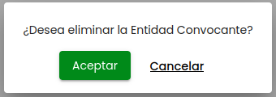
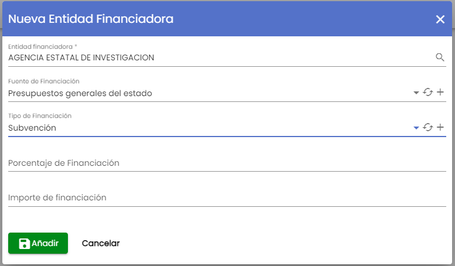
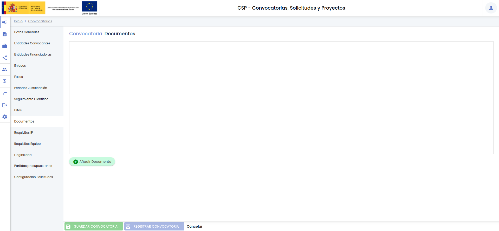

Hércules : CSP-Convocatorias¶
1. Introducción¶
El SGI cubre el ciclo de convocatorias - solicitudes - proyectos común en la gestión de la investigación, es decir, permite mantener la trazabilidad desde la convocatoria a los proyectos concedidos asociados a la misma. Desde el menú Convocatorias del módulo CSP se realiza la gestión de las convocatorias sobre las que posteriormente se podrán crear solicitudes, dando lugar, en el caso de resultar concedidas, a proyectos. La introducción de las convocatorias en el SGI no es una fase obligatoria, la unidad de gestión podría tomar la determinación de crear directamente los proyectos concedidos sin necesidad de crear la convocatoria.
La introducción de los datos de una convocatoria debe de ser realizada por el personal de la unidad de gestión a partir de la información publicada por el organismo convocante/financiador. Cada convocatoria quedará vinculada a una unidad de gestión (UGI, OTRI, OPE, etc.) de forma que se limite la visibilidad de la misma al personal que tenga habilitados permisos de acceso en el SGI para dicha unidad de gestión
La gestión de las convocatorias en el SGI será homogénea, independientemente de su naturaleza de financiación y/o la finalidad del proyecto resultante.
Las convocatorias creadas en el SGI podrán ser visibles para el personal investigador, a través de su acceso al SGI (MDU - Perfil de investigación). La información que tendrán disponible será la que haya sido transcrita al SGI por la unidad de gestión, que podrá incluir los enlaces web y/o la documentación facilitada por el organismo convocante/financiador, pero el ciclo de vida de la convocatoria en el SGI será independiente del proceso que siga la misma en el organismo correspondiente.
El SGI no definirá o limitará los criterios para decidir el registro de la convocatoria. De acuerdo a sus procedimientos internos, será el Servicio de investigación de cada Universidad quien decida o no registrar una convocatoria en el SGI, así como las solicitudes presentadas. Del mismo modo serán estos procedimientos internos, y los datos aportados por el personal de la unidad de gestión durante el registro de la convocatoria, los que determinarán si el personal investigador podrá realizar directamente el registro de la solicitud en el SGI. La configuración para habilitar el proceso de registro de las solicitudes estará disponible a nivel de convocatoria. Esto permitirá a las unidades de gestión tomar esta decisión en función de la casuística de cada convocatoria particular. En caso de no habilitar esta opción será el personal de las unidades de gestión quien deba registrar en el SGI las solicitudes presentadas, siempre y cuando resulte de su interés el disponer de esta información recogida en el SGI.
1.1 Detalle de una convocatoria¶
La entidad "Convocatoria" es una entidad de las consideras complejas. El detalle de una convocatoria se encuentra estructurado en varios apartados:
- Datos generales
- Entidades convocantes
- Entidades financiadoras
- Enlaces
- Fases
- Periodos de justificación económica
- Periodos de seguimiento científico
- Hitos
- Documentos
- Requisitos IP
- Requisitos equipo
- Elegibilidad
- Partidas presupuestarias
- Configuración de solicitudes
Cada uno de estos apartados constituye una pestaña o menú. Se verán con detalle en el apartado de creación de una nueva convocatoria.

1.2 Estados de una convocatoria¶
En su proceso de creación en el SGI una convocatoria puede estar en dos estados. Ambos estados hacen referencia al proceso de introducción de datos en el SGI y no al proceso administrativo de la convocatoria propiamente dicha:
- Borrador. Es el estado inicial por defecto. Es indicativo de que la convocatoria aún está en proceso de introducción por parte de la unidad de gestión. Una convocatoria en estado borrador:
- Podrá ser desactivada (y posteriormente recuperada).
- No tendrá limitaciones para introducir modificaciones sobre ninguno de sus apartados.
- No podrá vincularse a solicitudes y/o proyectos.
- No será visible desde el acceso del Perfil de investigación del SGI.
- Registrada. Es el estado final de la convocatoria. La unidad de gestión pasará la convocatoria a estado registrada cuando haya finalizado la introducción de sus datos. Una convocatoria en estado registrada:
- No podrá ser desactivada.
- Tendrá limitaciones para introducir modificaciones en algunos apartados.
- Podrá vincularse a solicitudes y/o proyectos.
- Será visible desde el acceso del Perfil de investigación del SGI.
Existen unos campos obligatorios mínimos para poder crear una convocatoria en estado borrador (Ver Datos obligatorios para crear una convocatoria) y, del mismo modo, unos campos mínimos para poder pasarla a estado registrada (Ver Datos obligatorios para registrar una convocatoria).
2. Listado y búsqueda de convocatorias¶
El acceso a la gestión de convocatorias ocupa el la primera posición en el menú del módulo CSP. Siguiendo la estructura general del SGI, tras pulsar en el menú Convocatorias se accede a la página inicial que contiene el listado de convocatorias y su buscador, que sigue las normas básicas descritas en MDU - 3.2 Buscadores y listados.

Por defecto, se listan todas las convocatorias disponibles sobre una tabla de resultados paginada, MDU-Manual de usuario - 3.5 Paginación de listados. La tabla muestra una serie de campos significativos:
- Título: Título que se ha dado a la convocatoria en el SGI.
- Identificación: Identificación o referencia de la convocatoria. es una cadena alfanumérica que identifica la convocatoria.
- Fecha inicio sol.: Fecha de inicio de la fase establecida como fase de presentación de solicitudes.
- Fecha fin sol.: Fecha de fin de la fase establecida como fase de presentación de solicitudes.
- Entidad convocante: Nombre de la entidad convocante. Si se hubiera introducido más de una entidad convocante, solamente se mostrará una de ellas (el resto estarán disponibles en el detalle de la convocatoria).
- Plan investigación: Es el nombre del plan de investigación asociado a la entidad convocante mostrada en el campo anterior.
- Entidad financiadora: Nombre de la entidad financiadora. Si se hubiera introducido más de una entidad financiadora, solamente se mostrará una de ellas (el resto estarán disponibles en el detalle de la convocatoria).
- Estado: Estado actual de la convocatoria.
- Activo: Campo que indica si la convocatoria ha sido desactivada o no.
- Acciones: Conjunto de acciones que están disponibles sobre la convocatoria. Las acciones disponibles sobre cada convocatoria podrán variar en función del estado en que se encuentre y/o si la convocatoria y tiene solicitudes o proyectos asociados.
El apartado de convocatoria incluye dos buscadores:
- Buscador simple
- Buscador ampliado
Por defecto, se muestra visible el buscador simple.
A través del botón "Limpiar" se eliminará cualquier criterio de búsqueda que hubiese sido introducido en el buscador activo en cada momento.
2.1 Buscador simple¶
Es el buscador mostrado por defecto. Dispone de dos campos de búsqueda:
- Título. Si se introduce una cadena en este filtro, se mostrarán las convocatorias que contengan la cadena introducida en cualquier parte del campo "título".
- Identificación. Si se introduce una cadena en este filtro, se mostrarán las convocatorias que contengan la cadena introducida en cualquier parte del campo "identificación" (referencia).
Si se rellenan los dos campos se mostrarán las convocatorias que cumplan ambas condiciones.
Una vez introducidos los filtros de búsqueda se debe pulsar el botón "Buscar". Los resultados coincidentes se mostrarán en el listado de resultados.
Se puede utilizar el botón "Limpiar" para vaciar cualquier valor introducido en cualquiera de los dos campos. Además de vaciar los campos de búsqueda el botón "Limpiar" vuelve a realizar la búsqueda, mostrando el listado completo de convocatorias.
Si se pulsa el botón "Buscador ampliado" se cambiará a la búsqueda avanzada.
2.2 Buscador ampliado¶
Al pulsar el botón "Buscador ampliado" se mostrarán todos los filtros de este buscador. El aspecto de la ventana de convocatorias pasa a ser:

El buscador ampliado contiene los siguientes campos:
- Título: Si se introduce una cadena en este filtro, se mostrarán las convocatorias que contengan la cadena introducida en cualquier parte del campo "título".
- Identificación: Si se introduce una cadena en este filtro, se mostrarán las convocatorias que contengan la cadena introducida en cualquier parte del campo "identificación" (referencia).
- Estado: Campo para aplicar búsquedas por el estado de la convocatoria. Es un desplegable con el listado de estados posible (borrador y registrada).
- Activo. Es un desplegable con los valores "sí", "no", "todos". La entidad "convocatoria" admite eliminación con recuperación (MDU-Manual de usuario - 3.10 Eliminar elemento), con el campo "activo" se permite realizar búsquedas sobre las convocatorias que hubieran sido eliminadas. Por defecto el filtro está precargado con el valor "sí", para que de partida solo se muestren las convocatorias activas. Para mostrar las convocatorias que hubieran sido eliminadas se debe establecer el valor de este filtro a:
- "No": se muestran solo las convocatorias que hubieran sido desactivadas (eliminadas).
- "Todas": se muestran todas las convocatorias, tanto las activas como las desactivadas (eliminadas).
- Unidad de gestión. Permite limitar la búsqueda a las convocatorias de una unidad de gestión. La unidad de gestión se indicará mediante un desplegable. En el desplegable de unidades de gestión no estarán incluidas todas las unidades configuradas en el SGI sino solamente las que cada persona tenga habilitadas en la configuración de acceso al SGI.
- Modelo de ejecución. Permite limitar la búsqueda de convocatorias a las de un modelo de ejecución. Los modelos de ejecución por los que se aplica la búsqueda se mostrarán en un desplegable. Para ampliar información sobre los modelos de ejecución, consultar CSP-Configuración - 7 Modelos de ejecución.
- Finalidad. Permite aplicar búsquedas sobre las convocatorias de un determinado tipo de finalidad. Los tipos de finalidad se listarán a través de un desplegable. Para ampliar información sobre los tipo de finalidad, se puede consultar CSP-Configuración - 3 Tipos de finalidad y CSP-Configuración - 7 Modelos de ejecución.
- Fecha publicación, desde - hasta: Con los campos "desde" y "hasta", ambos del tipo fecha, se puede establecer un periodo que permitirá buscar las convocatorias cuya fecha de publicación esté comprendida en el mismo. Ambos campos disponen de un control calendario a través del que se podrá seleccionar la fecha deseada.
- Abierto plazo de presentación de solicitudes. Este filtro permite buscar las convocatorias cuyo plazo de presentación de solicitudes se encuentre vigente al momento actual. El plazo de presentación de solicitudes no es un campo específico de la convocatoria sino que debe haber sido configurado como tal (apartados "configuración solicitudes" y "fases").
- Entidad convocante. Este campo permite especificar una entidad. Se realizará la búsqueda de las convocatorias que contengan a la entidad indicada como una de sus entidades convocantes. Para indicar la entidad convocante se utilizará el buscador común de empresas MDU-Manual de usuario - 8.2 Entidades o empresas
- Plan/programa investigación. Este campo permite especificar una plan o un programa de investigación. Se realizará la búsqueda de todas las convocatorias cuyas entidades convocantes estén asociadas al elemento seleccionado en el árbol o cualquiera que derive del mismo. Para indicar el plan o el programa se utilizará el buscador común de plan/programa de investigación MDU - Manual de usuario#7.7Selector de plan/programa de investigación.
- Entidad financiadora. Este campo permite especificar una entidad. Se realizará la búsqueda de las convocatorias que contengan a la entidad indicada como una de sus entidades financiadoras. Para indicar la entidad financiadora se utilizará el buscador común de empresas MDU-Manual de usuario - 8.2 Entidades o empresas.
- Fuente de financiación. Permite acotar la búsqueda a las convocatorias sobre las que participe una entidad financiadora a través de la fuente de financiación especificada. La fuente de financiación por la que se buscará deberá ser seleccionada del listado. Se listarán todas las fuentes de financiación disponibles en el SGI. Para más información se puede consultar CSP-Configuración - 10 Fuentes de financiación.
- Ámbito geográfico. Permite realizar búsquedas teniendo en cuenta el ámbito geográfico de la convocatoria. El ámbito geográfico deberá ser seleccionado a través del listado ofrecido en este campo. El listado de ámbitos geográficos es definido en tiempo del implantación del SGI.
- Listado de áreas temáticas. Con este filtro se limita la búsqueda de las convocatorias que utilicen un determinado listado de áreas temáticas. El listado de áreas temáticas deberá seleccionarse a partir del desplegable disponible en este campo, que contendrá todos los listados de áreas temáticas configurados en el SGI. Para más información sobre la configuración de los listados de áreas temáticas se puede consultar CSP-Configuración - 9 Listados de áreas temáticas.
- Palabras clave. Este filtro actúa sobre las palabras clave de la convocatoria. Se pueden incluir una o varias palabras. Este campo sigue el comportamiento general descrito en MDU-Manual de usuario - 9 Palabras clave.
Una vez introducidos los filtros de búsqueda se debe pulsar el botón "Buscar". Los resultados coincidentes se mostrarán en el listado de resultados. Todos los filtros de búsqueda actuarán como una conjunción "y", es decir, las convocatorias que se muestren en el listado de resultados deberán cumplir todos los filtros especificados.
Se puede utilizar el botón "Limpiar" para vaciar cualquier valor introducido en cualquiera de los campos. Además de vaciar los campos de búsqueda, el botón "Limpiar" vuelve a realizar la búsqueda mostrando el listado completo de convocatorias.
Si se pulsa el botón "Buscador simple" se cambiará a la versión básica del buscador.
2.3 Exportación de convocatorias¶
El listado de convocatorias obtenido del buscador puede ser exportado siguiendo los criterios generales indicados en MDU - Exportación de listados.

Al pulsar el icono de exportación situado a pie del listado de resultados, se mostrarán las opciones de exportación propias de las convocatorias:

Se debe seleccionar el formato de exportación. Los disponibles son:
- XLSX
- CSV
El detalle de una convocatoria se encuentra agrupado en diferentes apartados. Todos los apartados son susceptibles de ser incluidos en la exportación, sin embargo, para dar más flexibilidad a la exportación se podrá indicar qué apartados se precisa que sean incluidos. Por defecto, estarán marcados todos los apartados, pudiendo desmarcarlos y pasar a marcar únicamente aquellos que se desea incluir:
- Se se pulsa sobre la casilla "todos" estando marcada, se desmarcarán todas las casillas, pudiendo pasar a seleccionar individualmente cada una de ellas.
- Si la casilla "todos" está marcada, se podrán desmarcar una a una las casillas de aquellos apartados que no se desea incluir en la exportación.
Una vez introducidos todos los criterios de la exportación se deberá pulsar el botón "Exportar", se generará el documento asociado que podrá ser nombrado y descargado a la unidad de disco deseada.
3. Añadir nueva convocatoria¶
Desde el listado de convocatorias se dispondrá del botón "Añadir convocatoria".

Al pulsar este botón se mostrará la ventana de introducción de datos de una convocatoria, que presenta el siguiente aspecto:
El detalle de una convocatoria se encuentra distribuido e diferentes apartados, cada uno de ellos accesible desde el menú izquierdo.
- Datos generales
- Entidades convocantes
- Entidades financiadoras
- Enlaces
- Fases
- Periodos de justificación económica
- Periodos de seguimiento científico
- Hitos
- Documentos
- Requisitos IP
- Requisitos equipo
- Elegibilidad
- Partidas presupuestarias
- Configuración de solicitudes
3.1 Datos generales¶
Este apartado centraliza los datos principales de una convocatoria.

- Título: Campo de texto para introducir el título de la convocatoria. Es un campo obligatorio. (Ver Datos obligatorios para crear convocatoria)
- Tipo solicitud SGI. Sobre las convocatorias creadas en el SGI se podrán crear solicitudes vinculadas. El SGI cubre tres tipos de solicitudes: de proyectos, de RRHH y de grupos. En este campo se debe indicar el tipo de solicitudes al que dará lugar la convocatoria. Es un desplegable del que se debe elegir obligatoriamente un valor. (Ver Datos obligatorios para crear convocatoria). Por defecto, se muestra siempre precargado con el valor "proyecto", por ser el valor más común.
- Unidad de gestión. Se debe de indicar la unidad de gestión responsable de la convocatoria. Es un dato obligatorio (Ver Datos obligatorios para crear convocatoria). Se debe elegir un valor de los listados en el desplegable. Las unidades de gestión disponibles en el desplegables será aquellas que tenga configuradas cada persona en su perfil de acceso al SGI. Cuando una convocatoria se vincula a una unidad de gestión solo será visible para las personas que tengan configurada esa unidad de gestión en el SGI. Es decir, las convocatorias solo serán visibles para las personas con permiso sobre la unidad de gestión a la que se asocie la convocatoria.
- Modelo de ejecución. La convocatoria debe de estar asociada a un modelo de ejecución para que quede clasificada y tenga disponible la configuración de documentos, enlaces, fases e hitos del modelo (ampliar información en CSP-Configuración - Modelos de ejecución). El modelo de ejecución debe de ser elegido del listado que se incluye en el desplegable. Los modelos de ejecución disponibles en el listado serán los asociados a la unidad de gestión indicada en el campo anterior. Hasta que no se seleccione una unidad de gestión no estará disponible el listado de modelos de ejecución. Si bien no es obligatorio indicar un modelo de ejecución para guardar una convocatoria en estado "borrador", si lo será para pasar la convocatoria a estado "registrada" (ver Datos obligatorios para "registrar" una convocatoria). El componente disponible para seleccionar el modelo de ejecución es un desplegable con acceso directo a la gestión de modelos de ejecución, siguiendo lo descrito en MDU-Manual de usuario - 3.17 Controles sobre campos desplegables o selectores.
- Finalidad. En este campo se indicará la finalidad o tipo de la actividad que se financia con la convocatoria. El valor deberá ser seleccionado del listado ofrecido en el desplegable, que se corresponderá con los tipos de finalidad configurados sobre el modelo de ejecución seleccionado en el campo previo. Hasta que no se seleccione un modelo de ejecución no estará disponible el listado de finalidades. Puede consultarse CSP-Configuración - Modelos de ejecución y CSP-Configuración - Tipos de finalidad para ampliar más información sobre el origen de este campo. No es obligatorio indicar un tipo de finalidad para crear una convocatoria en estado borrador pero sí para marcar la convocatoria con estado "registrada", ver Datos obligatorios para crear convocatoria.
- Identificación. Es un campo de texto en el que se puede introducir una cadena alfanumérica a modo de identificador o referencia de la convocatoria. Puede ser utilizado a criterio de la unidad de gestión, por ejemplo para recoger un acrónimo interno de la convocatoria o el identificador público externo de la misma (como podría ser el identificador de la convocatoria en la Base de datos nacional de subvenciones, código BDNS). El SGI no realiza ningún tipo de operación con este campo, es un campo meramente informativo.
- Entidad gestora. Entidad que actúa como gestora de la convocatoria. Debe de ser seleccionada a través del buscador común de empresas MDU-Manual de usuario - 8.2 Entidades o empresas. Es un campo opcional. Además de la entidad gestora se podrán indicar las entidades convocantes y entidades financiadoras de la convocatoria.
- Fecha de publicación. Fecha de publicación de la convocatoria. Se puede seleccionar a través del componente calendario ofrecido sobre el campo. Es un campo opcional.
- Fecha provisional. Fecha de resolución provisional de la convocatoria (resolución provisional de las solicitudes presentadas a la convocatoria). Se puede seleccionar a través del componente calendario ofrecido sobre el campo. Es un campo opcional.
- Fecha de concesión. Fecha de concesión de la convocatoria (resolución provisiona de las solicitudes presentadas a la convocatoria). Se puede seleccionar a través del componente calendario ofrecido sobre el campo. Es un campo opcional.
- Duración de la actividad resultante. Es un valor numérico que permite indicar la duración en meses que se prevé que tenga la actividad investigadora resultante de la convocatoria (proyecto de investigación, ayuda de rrhh, etc.). Es un campo opcional.
- Convocatoria de excelencia. A través de este campo, que puede tomar los valores "sí" o "no", se indicará si la convocatoria está catalogada como una convocatoria de excelencia (dato que podrá ser tenido posteriormente en cuenta en alguno de los baremos de la producción científica). Es un campo opcional.
- Ámbito geográfico. Permite clasificar la convocatoria en cuanto a su ámbito geográfico. El valor debe ser seleccionado del listado ofrecido en el desplegable. El listado tiene unos valores fijos que habrán sido determinados durante la fase de implantación del sistema SGI (CSP- Configuración - Introducción). No es obligatorio indicar un ámbito geográfico para crear una convocatoria en estado borrador pero sí para marcar la convocatoria con estado "registrada", ver Datos obligatorios para crear convocatoria.
- Régimen de concurrencia. Permite clasificar la convocatoria en función del tipo de régimen de concurrencia. Se debe seleccionar un valor de los incluidos en el listado. El listado tiene unos valores fijos que habrán sido determinados durante la fase de implantación del sistema SGI (CSP- Configuración - Introducción).
- Clasificación producción científica/CVN. Permite clasificar la convocatoria en función del apartado CVN (norma FECYT) en el que se debe de incluir la actividad de investigación que resulte de la convocatoria. Se debe seleccionar un valor del desplegable. Es un campo opcional. El listado incluido en el desplegable tiene unos valores fijos:
- Ayudas y becas. Actividades a incluir en el apartado 060.030.010.000 de CVN.
- Proyectos competitivos. Actividades a incluir en el apartado 050.020.010.000 de CVN.
- Convenios, contratos y proyectos no competitivos. Actividades a incluir en el apartado 050.020.020.000 de CVN.
- Proyectos institucionales. Ayudas y becas. Actividades que se consideran ayudas y becas pero que no figurarán en el CVN por ser proyectos institucionales.
- Proyectos institucionales. Proyectos competitivos. Actividades que se consideran proyectos competitivos pero que no figurarán en el CVN por ser proyectos institucionales.
- Proyectos institucionales. Convenios, contratos y proyectos no competitivos. Actividades que se consideran proyectos no competitivos pero que no figurarán en el CVN por ser proyectos institucionales.
La inserción de la actividad resultante (que en el SGI será tratada siempre como un Proyecto) en el CVN será una funcionalidad ajena al SGI. El SGI pondrá este dato a disposición del sistema corporativo de CVN debiendo haberse realizado las tareas previas de integración entre ambos sistemas.
- Objeto o descripción general de la convocatoria. Campo de texto libre para introducir una descripción de la convocatoria. Es un campo opcional.
- Observaciones. Campo de texto libre para recoger cualquier observación que la unidad de gestión estime oportuno. Es un campo opcional.
3.1.1 Palabras clave¶
Una convocatoria puede contener una o más palabras clave, si bien no es obligatorio la introducción de palabras clave. La selección de las palabras clave representativas de la convocatoria será realizada libremente por la unidad de gestión. La introducción de palabras clave en las convocatorias sigue el comportamiento general descrito en MDU-Manual de usuario - 9 Palabras clave, permitiendo el uso de palabras clave ya existente o la introducción de nuevas palabras clave.
3.1.2 Listado de áreas temáticas¶
Una convocatoria puede asociarse a un listado de áreas temáticas con el objetivo de especificar el conjunto de áreas temáticas que a la que pudieran tener que restringirse las solicitudes candidatas.

Para añadir un listado de áreas temáticas a la convocatoria se debe pulsar el botón "Añadir área temática". Se mostrará una ventana desde la que se podrá indicar el listado de áreas temáticas a utilizar en la convocatoria.

El desplegable "Listado áreas temáticas" contendrá los listados activos creados a través de la opción de Configuración Áreas temáticas.
Al seleccionar el nombre de uno de los listados del desplegable, se mostrará el árbol de áreas correspondiente.

Las áreas que lleven a su izquierda el control desplegar , tendrá subáreas dependientes. Haciendo click sobre este control se desplegará el área:
, tendrá subáreas dependientes. Haciendo click sobre este control se desplegará el área:

Cada área temática va acompañada a su izquierda con una casilla de selección  . Al hacer click sobre la misma el área temática quedará seleccionada. Si se selecciona un área de nivel superior quedarán seleccionadas todas las subáreas dependientes, de forma que la casilla de selección de todas las subáreas quedará deshabilitada:
. Al hacer click sobre la misma el área temática quedará seleccionada. Si se selecciona un área de nivel superior quedarán seleccionadas todas las subáreas dependientes, de forma que la casilla de selección de todas las subáreas quedará deshabilitada:
Podrán seleccionarse una o varias áreas, de forma que una convocatoria puede vincularse:
- A un área temática concreta, pudiendo ocupar ésta cualquier nivel en el árbol de áreas del listado. Esto será indicativo de que la convocatoria restringe la actividad a ese área concreta.
- A varias áreas, de cualquier nivel, pudiendo ocupar éstas cualquier nivel en el árbol de áreas del listado. Esto será indicativo de que la convocatoria restringe la actividad a un grupo de áreas.

Una vez seleccionada un área bastará volver a pulsar sobre la casilla de selección para deseleccionarla.
Seleccionada el área o grupo de áreas se pulsará el botón "Añadir". Las áreas seleccionadas se mostrarán en el listado de áreas de la convocatoria:
Las solicitudes y proyectos derivados de la convocatoria deberán seleccionar una de las áreas restringidas en la convocatoria.
3.2 Entidades convocantes¶
Las entidades convocantes de una convocatoria se añadirán en el apartado "entidades convocantes". Inicialmente la convocatoria no tendrá ninguna entidad convocante. El aspecto de la pantalla será:
No será obligatorio que se indique ninguna entidad convocante. Este apartado podría dejarse sin cumplimentar, sin que esto impida que posteriormente se creen solicitudes o proyectos sobre la convocatoria.
Para añadir una entidad convocante se debe pulsar el botón "Añadir entidad convocante", se mostrará una ventana con el siguiente aspecto.

Se deberá indicar la Entidad de forma obligatoria. La introducción de una entidad convocante sigue el comportamiento indicado en el apartado general Buscador común de entidades. Se seleccionará una entidad del listado devuelto por el buscador.

La entidad seleccionada en el listado del buscador figurará como entidad convocante en la ventana de "añadir entidad convocante" a la convocatoria:

Las entidades convocantes participan en la convocatoria a través de un Plan de investigación o ayudas. Al añadir una entidad se puede indicar el plan de investigación, así como el programa, subprograma, etc. del Plan con el que se corresponde la convocatoria. El Plan de investigación se seleccionará del desplegable "Plan". Este desplegable mostrará el listado de planes de investigación activos creados desde la opción Configuración - Planes de investigación. No será obligatorio que la entidad convocante se vincule a ningún Plan de investigación. Si se selecciona un Plan, podrá indicarse, posteriormente, el programa, subprograma, modalidad, topic, etc. con el que se corresponde cada solicitud y/o proyecto que se creen sobre la convocatoria, en función del nivel del Plan de investigación seleccionado en este punto de la convocatoria.
Si se quiere especificar un plan para la convocatoria se debe seleccionar uno de los mostrados en el desplegable "Plan":

Tras seleccionar un plan se mostrará el árbol de programas del plan seleccionado:
El desglose de programas, subprogramas, modalidades, etc. del Plan de investigación será el que se hubiera realizado en la opción Configuración - Planes de investigación. Con el control se podrá ir desplegando el árbol de programas. A continuación pueden verse una serie de imágenes que ilustran como se avanza en la profundidad del árbol de programas, a medida que se van desplegando los elementos:


El SGI no limita el número de convocatorias que se creen para una Entidad y un Plan de investigación. Es la Unidad de gestión quien decidirá, en cada caso particular, si desea crear en el SGI una convocatoria para todo el plan o una convocatoria para un programa concreto dentro del plan o incluso convocatorias a nivel de subprograma, modalidad, submodalidad o topic. El criterio para hacerlo dependerá del detalle con el que se vaya a crear la convocatoria en el SGI, por ejemplo si se van a recoger los costes elegibles, los requisitos que debe cumplir el/la IP o el equipo, etc. Si se introducen estos datos en el SGI y éstos puede variar en función del programa, subprograma, modalidad, submodalidad, ... se deberá crear una convocatoria diferente para cada programa, subprograma, modalidad o submodalidad, según el nivel del plan de investigación a partir del que estos criterios puedan ser diferentes. Otros criterios que podría tomar la unidad de gestión para crear más o menos convocatorias asociadas a una misma Entidad y Plan podría ser:
- La participación de otras entidades convocantes, según el programa, subprograma, etc. en la convocatoria.
- La limitación de las solicitudes a un determinado programa, subprograma, modalidad, submodalidad, topic, etc.
- El interés o no de contar con las solicitudes pre-agrupadas en función del programa, subprograma, modalidad, submodalidad, topic, etc.
Para seleccionar el programa, subprograma, modalidad, etc. al que se asocia la entidad convocante bastará marcar la casilla disponible a la izquierda de cada elemento del árbol de programas. Para cada entidad convocante solamente se puede seleccionar un elemento del árbol de programas, independientemente del nivel que ocupe el elemento seleccionado dentro del árbol de programas del plan. Una vez seleccionado el elemento del árbol de programas se debe pulsar el botón "Añadir" para que quede asociada la entidad convocante con su plan a la convocatoria.
A continuación se muestran una serie de ejemplos seleccionando elementos de diferente nivel del árbol de programas.
Selección de una submodalidad (elemento de cuarto nivel del árbol de programas):

Tras pulsar el botón "añadir" se volverá al apartado de entidades convocantes de la convocatoria:

Se añadirá la nueva entidad convocante al listado de entidades convocantes de la convocatoria, mostrándose en la tabla con las siguientes columnas:
- Nombre. Es el nombre de la entidad seleccionada.
- CIF. Es el CIF de la entidad seleccionada.
- Plan. Es el nombre del Plan de investigación con el que se asocia la entidad convocante. Solo se mostrará en caso de que hubiese sido introducido, pues no es obligatorio vincular la entidad convocante con ningún plan de investigación.
- Programa. Solo se mostrará si la entidad convocante se vincula a un plan de investigación, y se selecciona un elemento del árbol de programas del mismo. En esta columna se mostrará el programa (elemento de primer nivel del árbol de programas) correspondiente con el elemento al que se vincula la entidad (que puede ser un subprograma, una modalidad, una submodalidad, etc.)
- Modalidad. Es el nombre del elemento con el que se vincula la entidad convocante. Solo se mostrará en caso que la entidad convocante se hubiera asociado a un elemento de un nivel inferior a un programa. Se mostrará bajo la columna "modalidad" sea cual sea su nivel (si se selecciona una submodalidad se mostrará el nombre de la misma en esta columna, si se selecciona una modalidad se mostrará el nombre de la misma en esta columna y si se selecciona una subprograma se mostrará el nombre del mismo también en esta columna). Es decir, en este tabla se recoge bajo la misma columna, con título "modalidad" el nombre del elemento del árbol de programas con el que se asocia la entidad convocante, independientemente del nivel que ocupe el elemento seleccionado en el árbol de programas (siempre que sea de un nivel inferior al primero).
Se muestra a continuación otro ejemplo, suponiendo que el elemento seleccionado sea una modalidad (elemento de tercer nivel del árbol de programas):
Tras pulsar el botón "añadir" se volverá al apartado de entidades convocantes de la convocatoria, apreciándose cómo bajo la columna "modalidad" se muestra el nombre del elemento seleccionado:

Se muestra a continuación otro ejemplo, suponiendo que el elemento seleccionado sea un subprograma (elemento de segundo nivel del árbol de programas):

Tras pulsar el botón "añadir" se volverá al apartado de entidades convocantes de la convocatoria, apreciándose cómo bajo la columna "modalidad" se muestra el nombre del elemento seleccionado, en este caso un subprograma:
Se muestra a continuación otro ejemplo, suponiendo que el elemento seleccionado sea un programa (elemento de primer nivel del árbol de programas):

Tras pulsar el botón "añadir" se volverá al apartado de entidades convocantes de la convocatoria, apreciándose cómo bajo la columna "modalidad" ahora no se muestra ningún valor, puesto que el elemento seleccionado en el árbol de programas, es un elemento de primer nivel (programa):
Finalmente se muestra el ejemplo suponiendo que no se haya seleccionado ningún elemento del árbol de programas, es decir, que la entidad convocante se asocie directamente a todo el Plan de investigación:
En este caso tras pulsar el botón "Añadir" se mostrará un mensaje de confirmación:
Si se confirma la acción (pulsando el botón "Aceptar") se volverá al apartado de entidades convocantes. En este caso tanto las columnas "programa" como "modalidad" estarán vacías, estando informada solamente la columna del "plan":

Como ya se ha indicado anteriormente, la vinculación de la entidad convocante a un elemento de un nivel u otro del árbol de programas restringirá las solicitudes y/o proyectos que se creen sobre la convocatoria. Si la entidad se asocia directamente al Plan de investigación, las solicitudes o proyectos derivados podrán crearse sobre cualquier programa, subprograma, etc. del plan. Si la entidad se asocia, por ejemplo, a una modalidad, las solicitudes o proyectos derivados podrán crearse sobre cualquiera de las submodalidades.
Una convocatoria podrá tener tantas entidades convocantes como sea necesario, si bien no se permite que una misma entidad convocante se añada dos veces a la misma convocatoria. En este caso no se permitirá volver a seleccionar la entidad convocante ya añadida en el listado devuelto por el buscador de entidades:

Se podrán seguir añadiendo entidades convocantes a la convocatoria hasta que se creen solicitudes o proyectos vinculados a la convocatoria. Desde el listado de entidades convocantes se podrán añadir nuevas entidades, así como modificar y/o eliminar una entidad ya añadida.
Se podrá eliminar una entidad convocante de una convocatoria pulsando sobre el icono de acción "Borrar" de una entidad desde el listado de entidades convocantes de la convocatoria.
Al pulsar este botón, se abrirá una ventana emergente para confirmar la acción:

Si se pulsa el botón "Cancelar", se cerrará la ventana del mensaje de confirmación y la entidad convocante no será borrada.
Si se pulsa el botón "Aceptar", la relación entre la convocatoria y la entidad convocante desaparecerá de la tabla de entidades convocantes de la convocatoria, mostrando el icono de la admiración en el menú "Entidades convocantes" y el mensaje de información en la parte inferior de la pantalla para recordar al personal de gestión que debe de pulsar el botón "Guardar convocatoria" para que los cambios realizados (en este caso un borrado de una entidad convocante de una convocatoria) se consoliden.
3.3 Entidades financiadoras¶
Las entidades financiadoras de una convocatoria se añadirán en el apartado "entidades financiadoras". Las entidades financiadoras son tratadas de forma independiente a las entidades convocantes, pudiendo ser diferentes o bien figurar las mismas entidades en ambos apartados.
Inicialmente la convocatoria no tendrá ninguna entidad financiadora. El aspecto de la pantalla será:

No será obligatorio que se indique ninguna entidad financiadora. Este apartado podría dejarse sin cumplimentar, sin que esto impida que posteriormente se creen solicitudes o proyectos sobre la convocatoria.
Para añadir una entidad financiadora se pulsará el botón "Añadir entidad financiadora". Se mostrará una ventana con el siguiente aspecto:

Se puede indicar la fuente de financiación y el tipo de financiación con los que participa una entidad financiadora en una convocatoria, sin que ninguno de los dos campos sean obligatorios.
Del mismo modo se puede indicar el porcentaje de financiación sobre el total de la convocatoria y/o el importe de financiación aportados por la entidad. Tampoco será obligatorio ninguno de los dos campos.
Se deberá indicar la Entidad de forma obligatoria. La introducción de una entidad financiadora sigue el comportamiento indicado en el apartado general Buscador común de entidades. Se seleccionará una entidad del listado devuelto por el buscador.

La entidad seleccionada se mostrará en el campo "Entidad" de la ventana "Añadir entidad financiadora".

Podría pulsarse directamente el botón "Añadir" o podrían cumplimentarse el resto de campos no obligatorios.
- Fuente de financiación. Indicará la fuente de financiación a través de la que la entidad participa en la convocatoria. Se debe seleccionar un valor del desplegable. El listado de valores disponible será el introducido a través de la opción Configuración - Fuente de financiación. El desplegable "fuente de financiación" incorpora los controles "refrescar"
 y "crear"
y "crear"  siguiendo el comportamiento descrito en Controles sobre campos desplegables
siguiendo el comportamiento descrito en Controles sobre campos desplegables

Tras seleccionar un valor, éste se mostrará en el campo "Fuente de financiación".
- Tipo de financiación: Indicará el tipo o mecanismo financiero a través del que la entidad aporta la financiación a la convocatoria. Se debe seleccionar un valor del desplegable. El listado de valores disponible será el introducido a través de la opción Configuración - Tipo de financiación. El desplegable "fuente de financiación" incorpora los controles "refrescar" y "crear" siguiendo el comportamiento descrito en Controles sobre campos desplegables.


- Porcentaje de financiación. Se permite indicar un valor numérico entero comprendido entre 0 y 100. Si se intenta introducir un valor superior a 100 se mostrará un mensaje de error sobre el campo:


El porcentaje de financiación será relativo a la financiación total de la convocatoria teniendo en cuenta la aportación del resto de entidades que participen en la financiación de la misma.
- Importe de financiación. Se permite indicar un valor numérico decimal. Será el importe aportado por la entidad a la convocatoria. Se permite su introducción independientemente de que hubiera sido indicado o no el valor "porcentaje de financiación".
Introducidos los campos deseados se deberá pulsar el botón "Añadir". La entidad financiadora pasará a mostrarse en el listado del apartado "entidades financiadoras" de la convocatoria:
El campo "ámbito" mostrado en la tabla del listado de entidades financiadoras se corresponde con el ámbito geográfico de la fuente de financiación (ver detalle).
Se pueden añadir tantas entidades financiadoras como sea necesario. Una misma entidad podrá añadirse más de una vez, de forma que se podrán recoger aquellos casos en los que una misma entidad pudiera participar a través de dos fuentes de financiación diferentes.

Tras pulsar el botón "Añadir" se mostraría la entidad con la fuente de financiación en el listado de entidades financiadoras

Se podrían añadir tantas entidades financiadoras como se desee en la convocatoria.

Desde el listado de entidades convocantes se podrán añadir nuevas entidades, así como modificar y/o eliminar una entidad ya añadida.

Se podrán seguir añadiendo entidades financiadoras a la convocatoria hasta que se creen solicitudes o proyectos vinculados a la convocatoria.
3.4 Enlaces¶
En este apartado se pueden recoger enlaces o URLS (direcciones de portales web) relacionados con la convocatoria. Es un apartado que permite, de forma genérica, ampliar la información de la convocatoria.
Inicialmente el apartado estará vacío, presentando el siguiente aspecto:
Para añadir un nuevo enlace se debe pulsar el botón "añadir enlace". Se mostrará la siguiente ventana:
Se dispone de tres campos:
- URL. Es el único campo obligatorio. Es un campo de texto donde se debe introducir la dirección URL donde se podrá encontrar información adicional sobre la convocatoria. No se realizará ninguna comprobación sobre la validez de la URL indicada.

- Descripción. De forma opcional se puede incluir una descripción de la información recogida en la URL indicada.
- Tipo de enlace. De forma opcional se puede indicar la tipología del enlace. El tipo de enlace debe seleccionarse del listado proporcionado. El listado incluirá los tipos de enlace configurados en el modelo de ejecución indicado para la convocatoria en el apartado Datos generales.

Se recuerda que el tipo de enlace no es más que una clasificación que permite categorizar la información contenida en la URL.
Cumplimentados los campos deseados se pulsará el botón "Añadir":
El enlace pasará a estar disponible en el listado de enlaces de la convocatoria, desde donde podrá ser modificado y/o eliminado:

Se podrán añadir tantos enlaces como sea necesario.
Se pueden añadir, modificar y eliminar enlaces independientemente del estado de la convocatoria y de si hay o no solicitudes y/o proyectos vinculados.
3.5 Fases¶
En este apartado se definen las diferentes fases que se quieren registrar en el SGI asociadas a la convocatoria. En él se incluirán los plazos o fases generales de la convocatoria, teniendo en cuenta que los periodos de justificación y de seguimiento científico tendrán sus propios apartados.
Inicialmente el apartado estará vacío, presentando el siguiente aspecto:
Para añadir una nueva fase se debe pulsar el botón "añadir fase". Se mostrará la siguiente ventana:

En un primer momento, se dispone de cuatro campos:
- Tipo de fase. Es obligatorio indicar una tipología para la fase. El tipo de fase debe seleccionarse del listado proporcionado. El listado incluirá los tipos de fase configurados en el modelo de ejecución indicado para la convocatoria en el apartado Datos generales.

- Fecha inicio. Es obligatorio indicar una fecha de inicio para la fase. Tendrá un formato fecha y hora y se establecerán las 00:00:00 como hora por defecto, si bien el usuario podrá modificarla.
- Fecha fin. Es obligatorio indicar una fecha de fin para la fase. Tendrá un formato fecha y hora y se establecerán las 23:59:59 como hora por defecto, si bien el usuario podrá modificarla. Podrá darse el caso de que una fase pueda recogerse en una sola fecha, en este caso se indicaría el mismo valor tanto en "fecha inicio" como en "fecha fin". Se comprobará que las fecha de fin sea siempre mayor o igual que la fecha de inicio.
- Observaciones. De forma opcional se pueden incluir una observaciones de la información recogida en la fase de la convocatoria.
- Generar aviso. De forma opcional, se puede indicar si para la fase se han de generar avisos, que no son más que emails con información acerca de la fase, marcando este indicador, o bien dejarlo desmarcado si no se considera necesario generarlos.
Una vez se cumplimenten los datos deseados, y considerando que no se quieran generar avisos, se debe pulsar el botón "Añadir":

El funcionamiento y condiciones para el caso de que se quieran generar avisos, que en el SGI denominaremos también comunicados, se describe más a detalle en el apartado Comunicados de fases.
La fase pasará a estar disponible en el listado de fases de la convocatoria, desde donde podrá ser modificado y/o eliminado:

Pulsando el botón "Guardar convocatoria", se consolidarán los cambios.
Se podrán añadir tantas fases como sea necesario.
Se podrán añadir, modificar/eliminar las fases disponibles independientemente del estado de la convocatoria a excepción de la fase vinculada al campo "fase presentación solicitudes" de la pestaña "configuración de solicitudes". En este caso, en vez de mostrar los iconos de editar y eliminar, se mostrará un icono de información indicando "No se puede modificar ni eliminar la fase porque es la fase de presentación de solicitudes".

3.5.1 Comunicados de fases¶
En el caso de que se quiera enviar un aviso o comunicado relativo a una fase de la convocatoria, a la hora de dar de alta o modificar dicha fase se debe marcar el indicador "Generar aviso".
Solo se podrá marcar este indicador si la fase es a futuro, esto es, si tanto fecha de inicio como fecha de fin de la fase son posteriores al momento (fecha y hora) actual.
Al marcar este campo, se podrán informar un conjunto de datos adicionales a los básicos de la fase, que se corresponderán con lo que denominaremos "Primer aviso" de la fase, así como generar, también de manera opcional, un segundo aviso para dicha fase.
Se podrán configurar por tanto hasta 2 avisos, teniendo cada uno de ellos los mismos campos, pero que se pueden adaptar por parte del usuario para uno u otro de manera que puedan tener fecha, asunto, contenido y destinatarios diferentes.
La presentación de los campos del Primer Aviso y Segundo Aviso será en forma de "pestañas", habiendo una pestaña por aviso, con la operativa habitual de este tipo de componente.
Solo se podrá programar un segundo aviso para una fase si ésta tiene ya programado un primer aviso, ya que, en otro caso, el indicador de "Generar segundo aviso" ni siquiera es visible en la ventana con los datos de la fase.
Al marcar el indicador "Generar aviso" de una fase, se mostrarán un conjunto de datos adicionales que permitirán configurar el primer aviso a enviar.
Nada más marcar el indicador, dentro del conjunto de datos adicionales que se muestran, estará seleccionada la pestaña "Primer aviso", donde se podrán informar los datos específicos de dicho aviso.
Si estando marcado el indicador "Generar aviso" se marca el indicador "Generar segundo aviso", se mostrarán los datos para configurar los datos específicos de ese segundo aviso, que serán los equivalentes al caso del primero.

Los campos adicionales que se mostrarán son siete:
- Generar segundo aviso. De forma opcional, se puede indicar si para la fase se ha de generar un segundo aviso, adicional al primero (también por email), marcando este indicador, o bien dejarlo desmarcado si no se considera necesario generarlo. El funcionamiento y condiciones para el caso de que se quiera generar un segundo aviso es similar al del primero, por lo que se describen de manera conjunta.
- Fecha y hora del primer/segundo envío. Será obligatorio indicar la fecha y hora concreta en la que se quiere programar el envío del comunicado. Por defecto, aparecerá la fecha y hora de inicio de la fase para ambos envíos. Deberá ser posterior al momento actual + 15 minutos, para permitir que al usuario le pueda dar tiempo a realizar los cambios que precise en la fase, el aviso o en otros apartados de la convocatoria, antes de Guardar los cambios en la pantalla de Convocatoria, momento en el que se ya sí se registrará la programación del envío para la fecha y hora indicadas. En el caso del segundo aviso, deberá ser además, posterior a la fecha de envío del primer aviso. La fecha y hora podrán ser modificadas por el usuario.
- Asunto. Será necesario informar un asunto para el email. Se mostrará un asunto por defecto, según lo que se haya configurado en la Universidad en el momento de la implantación para este tipo de comunicados y para la unidad de gestión a la que pertenezca la convocatoria. Este asunto podrá ser modificado por el usuario.
- Contenido del email. Será necesario informar un contenido o cuerpo para el email. Se mostrará un contenido por defecto, según lo que se haya configurado en la Universidad en el momento de la implantación para este tipo de comunicados y para la unidad de gestión a la que pertenezca la convocatoria. Al contenido por defecto, se concatenarán además, en caso de haberse informado, las observaciones introducidas por el usuario antes de marcar el indicador "Generar aviso". Este contenido podrá ser modificado por el usuario.
- Destinatarios. Será necesario informar al menos un destinatario del email de aviso, pero podrá definirse una lista. Esta lista de destinatarios del email serán adicionales a los que añadirán los indicadores "Añadir IPs solicitud" y "Añadir IPs proyecto" si se marcan. Se mostrarán unos destinatarios por defecto según lo configurado en la Universidad en el momento de la implantación para este tipo de comunicados y para la unidad de gestión a la que pertenezca la convocatoria. Esta lista podrá ser modificada por el usuario según lo descrito en el apartado Destinatarios de comunicados.
- Añadir IPs solicitud. De manera opcional, se puede indicar si se quiere añadir a los IPs de las solicitudes asociadas a la convocatoria como destinatarios del email de aviso. Estos destinatarios no se mostrarán ni se guardarán en el campo "Destinatarios" ya que se resolverán en el día y hora en el que se haya programado el envío del aviso.
- Añadir IPs proyecto. De manera opcional, se puede indicar si se quiere añadir a los IPs de los proyectos asociados a las solicitudes de la convocatoria como destinatarios del email de aviso. Estos destinatarios no se mostrarán ni se guardarán en el campo "Destinatarios" ya que se resolverán en el día y hora en el que se haya programado el envío del aviso.
Una vez se cumplimenten o modifiquen los datos deseados, se debe pulsar el botón "Añadir" o "Aceptar, según el caso, y a continuación se guarden los cambios en la convocatoria, pulsando el botón "Guardar Convocatoria", se generarán o actualizarán las programaciones y textos de los avisos en función de lo que el usuario haya seleccionado e introducido.
Cuando el sistema detecta que se ha alcanzado la fecha y hora en la que se ha programado el envío de alguno de los comunicados, calculará los IPs de solicitudes y de proyectos de los avisos, si se hubiesen seleccionado, y generará un email con el asunto, contenido y destinatarios que se hayan configurado para ese aviso.
Un ejemplo de email podría ser el siguiente:
3.5.2 Destinatarios de comunicados¶
Si se quiere que el aviso llegue, además de a los destinatarios por defecto, a un nuevo destinatario, se debe añadir éste al conjunto de destinatarios.
En este caso, se plantean dos opciones:
-
Que el destinatario adicional se encuentre en los sistemas de gestión de personas de la Universidad. En este caso, hay 2 formas posibles de añadir destinatarios al comunicado:
- Utilizando la función de autocompletar, con la operativa descrita en MDU-Manual de usuario - 6.5 Buscadores con campos autocomplete.

-
- Utilizando el texto introducido + el botón buscar para abrir el buscador de personas con el resultado de la búsqueda por dicho texto ya cargada, con la operativa descrita en MDU-Manual de usuario - 8.1.1 Buscar personas.
2. Que el destinatario adicional NO se encuentre en los sistemas de gestión de personas de la Universidad, bien porque no exista ninguna relación registrada con él en dichos sistemas bien porque el destinatario a añadir sea una lista de distribución o un email genérico y no propio de o asociado a una persona en concreto.
Se muestra a continuación un ejemplo en el que ya existe un destinatario por defecto y se procede a añadir a uno nuevo.
En primer lugar, se añade un destinatario que está ya en los sistemas de la Universidad. Esta sería la secuencia de acciones a realizar:
-
- Teclear parte de un dato (nombre, apellidos o email) por el que filtrar la persona a añadir en el componente "Destinatarios" en la zona donde aparece el texto "Añadir destinatario ...", por ejemplo, "antonio mar":
- Si se encuentra la persona entre las sugerencias del autocompletar, para completar la operación de añadir el destinatario, se debe seleccionar una persona y a continuación pulsar "click" con el ratón o bien pulsar la tecla "enter", con lo que la persona se añadirá a la lista de destinatarios.

3. Si en los 10 primeros resultados propuestos por el autocompletar no aparece la persona buscada, se deberán introducir más caracteres para refinar la búsqueda o bien se podrá pulsar sobre el botón "Buscar", que abrirá el buscador de personas lanzando por defecto la búsqueda con el texto que el usuario haya introducido en el cajetín de "Destinatario".

4. Se deberá pulsar a continuación el botón "Seleccionar" de la fila de la persona una vez la localicemos en el la lista de resultados o bien restringir más la búsqueda introduciendo más caracteres en el filtro hasta que se encuentre. Se debe seleccionar una persona que disponga de un email principal, ya que en otro caso, el comunicado no se podría generar.
5. Una vez se haya seleccionado el destinatario del aviso por la vía que haya sido posible, se debe pulsar el botón "Añadir destinatario" para que aparezca en la lista de Destinatarios. Vemos a continuación cómo quedaría el resultado del proceso.

En el caso de que un destinatario de este tipo no disponga de email principal, no se podrá seleccionar ni desde el buscador, donde la acción "Seleccionar" se presenta desactivada, ni desde el componente autocompletar, presentándose al usuario como "Nombre Apellidos ()" en este último caso, reflejando así el que no tiene un email al que poder enviar los comunicados.

A continuación, se muestra un ejemplo de cómo a añadir un destinatario que o bien no figura en el sistema de gestión de personas o bien es una lista de correo o similar. En este caso, esta sería la secuencia de acciones a realizar:
- Se tecleará el email completo en el componente "Destinatarios" en la zona donde aparece el texto "Añadir destinatario ...", por ejemplo, "jimancas.lopez@educastur.org":

2. Para completar la operación y que quede añadido a la lista de destinatarios, se debe pulsar la tecla "enter":
Para este tipo de destinatarios, si se introduce un email cuyo formato es inválido, éste no se añadirá a la lista.
Para ambos tipos de destinatario, si se trata de añadir un email que ya existía previamente en la lista, no se volverá a añadir.
3.6 Periodos de justificación¶
En el apartado "Periodos de justificación" se podrán recoger los diferentes períodos en los que es necesario justificar económicamente la ejecución de los proyectos que se deriven de la convocatoria. Aunque los periodos de justificación económica pudieran quedar identificados en el apartado de Fases, junto con una correcta configuración de los tipos de fases del Modelo de ejecución, la información de las convocatorias contarán con un apartado exclusivo para ellos.
En el momento inicial de creación de una convocatoria este apartado no dispondrá de ningún dato, presentando el siguiente aspecto:

No es obligatorio definir períodos de justificación para la Convocatoria dentro del SGI.
Para añadir un período de justificación se pulsará el botón "Añadir Periodo Justificación". Se mostrará la siguiente pantalla:

Se dispone de los siguientes campos:
- Tipo (de período). Es obligatorio indicar el tipo de periodo de justificación. El tipo de periodo debe seleccionarse del listado proporcionado. El tipo de justificación responde a la clasificación en base a la periodicidad del mismo, podrá tomar un valor entre:
- Periódico
- Intermedio
- Final
- Periodo a justificar (desde el mes - hasta el mes). Es obligatorio informar el período que se va a justificar. El mes inicial y el mes final delimitarán el número de meses que comprende el periodo de ejecución que se justificará. Estos meses serán relativos a la duración e inicio que finalmente tendrá cada uno de los proyectos resultantes de la convocatoria. No se permitirá que un mismo mes quede solapado en diferentes periodos de justificación de la convocatoria.
- Periodo de presentación de justificación (fecha inicio presentación - fecha fin presentación). Fecha de inicio y fecha de fin, que podrán dejarse sin cumplimentar en la fase de convocatoria, serán las fechas que acoten el plazo de presentación de toda la documentación asociada al periodo de justificación. Aunque podrán indicarse en la convocatoria, será una información que también estará presente en los proyectos, siendo en esta entidad donde ya deban tomar los valores definitivos.
- Observaciones. Se pueden incluir opcionalmente unas observaciones acerca del período de justificación.
Cumplimentados los campos deseados se pulsará el botón "Añadir":

El período de justificación pasará a estar disponible en el listado de períodos de justificación de la convocatoria, desde donde podrá ser modificado y/o eliminado:
El número de periodo será un secuencial dentro de la convocatoria que asignará directamente el sistema en función de la ordenación de los meses de los periodos. No existirán dos periodos con el mismo número. Tampoco pueden existir saltos de meses entre periodos, ya que no se puede dar la situación de que queden días fuera desde el día de inicio del primer periodo hasta el día fin del último periodo, por lo que el sistema validará e informará al usuario en el caso de que esté intentando introducir un período que deje meses sin cubrir:
No se limitará el número de periodos de justificación que puedan ser añadidos a una convocatoria. Una vez asociado un periodo de justificación a una convocatoria, sus datos podrán ser modificados y/o podrá eliminarse, independientemente del estado de la convocatoria y de si hay o no solicitudes y/o proyectos vinculados.
3.7 Seguimiento científico¶
En el apartado "Seguimiento científico" se podrán recoger los diferentes períodos en los que es necesario llevar a cabo el seguimiento de las labores de investigación durante la ejecución de los proyectos que se deriven de la convocatoria. Aunque los periodos de seguimiento científico pudieran quedar identificados en el apartado de Fases, junto con una correcta configuración de los tipos de fases del Modelo de ejecución, la información de las convocatorias contarán con un apartado exclusivo para ellos. Seguirán la misma estructura que los periodos de justificación.
En el momento inicial de creación de una convocatoria este apartado no dispondrá de ningún dato, presentando el siguiente aspecto:
No es obligatorio definir períodos de seguimiento científico para la Convocatoria dentro del SGI.
Para añadir un período de seguimiento se pulsará el botón "Añadir Periodo Seguimiento Científico". Se mostrará la siguiente pantalla:

Se dispone de los siguientes campos:
- Tipo (de período). Es obligatorio indicar el tipo de periodo de seguimiento científico. El tipo de periodo debe seleccionarse del listado proporcionado. El tipo de seguimiento científico responde a la clasificación en base a la periodicidad del mismo, podrá tomar un valor entre:
- Periódico
- Intermedio
- Final
- Periodo de seguimiento (desde el mes - hasta el mes). Es obligatorio informar el período del que se va a presentar la información de seguimiento. El mes inicial y el mes final delimitarán el número de meses que comprende el periodo de seguimiento científico, definiendo así el rango del mismo. Serán relativos a la duración e inicio que finalmente tendrá cada uno de los proyectos resultantes de la convocatoria. Los periodos deberán ser consecutivos, de forma que un mes esté incluido en un único periodo.
- Periodo de presentación de la memoria de seguimiento (fecha inicio presentación - fecha fin presentación). Fecha de inicio y fecha de fin, que podrán dejarse sin cumplimentar en la fase de convocatoria, serán las fechas que acoten el plazo de presentación de toda la documentación asociada al periodo de seguimiento. Aunque podrán indicarse en la convocatoria, será una información que también estará presente en los proyectos, siendo en esta entidad donde ya deban tomar los valores definitivos.
- Observaciones. Se pueden incluir opcionalmente unas observaciones acerca del período de seguimiento científico.
Cumplimentados los campos deseados se pulsará el botón "Añadir":

El período de seguimiento científico pasará a estar disponible en el listado de períodos de seguimiento científico de la convocatoria, desde donde podrá ser modificado y/o eliminado:

El número de periodo será un secuencial dentro de la convocatoria que asignará directamente el sistema en función de la ordenación del mes inicial. No existirán dos periodos con el mismo número. Tampoco pueden existir saltos de meses entre periodos, ya que no se puede dar la situación de que queden días fuera desde el día de inicio del primer periodo hasta el día fin del último periodo, por lo que el sistema validará e informará al usuario en el caso de que esté intentando introducir un período que deje meses sin cubrir:
No se limitará el número de periodos de seguimiento científico que puedan ser añadidos a una convocatoria.
Una vez asociado un periodo de seguimiento a una convocatoria, sus datos podrán ser modificados y/o podrá eliminarse, independientemente del estado de la convocatoria y de si hay o no solicitudes y/o proyectos vinculados.
3.8 Hitos¶
En este apartado se definen los diferentes hitos o eventos que se quieren registrar en el SGI asociados a la convocatoria. En él se registrará cualquier acontecimiento que resulte de interés mantener identificado en el historial de la convocatoria.
Inicialmente el apartado estará vacío, presentando el siguiente aspecto:

Para añadir un nuevo hito se debe pulsar el botón "Añadir Hito". Se mostrará la siguiente ventana:

En un primer momento, se dispone de cuatro campos:
- Tipo de hito. Es obligatorio indicar una tipología para el hito. El tipo de hito debe seleccionarse del listado proporcionado. El listado incluirá los tipos de hito configurados en el modelo de ejecución indicado para la convocatoria en el apartado Datos generales.

- Fecha y hora. Es obligatorio indicar la fecha y hora a la que se vincula el hito, es la fecha en la que ha ocurrido u ocurrirá.
- Observaciones. De forma opcional se pueden incluir una observaciones de la información recogida en el hito de la convocatoria.
- Generar aviso. De forma opcional, se puede indicar si para el hito se ha de generar un aviso, que no es más que un email con información acerca del mismo, marcando este indicador, o bien dejarlo desmarcado si no se considera necesario generarlo.
Una vez se cumplimenten los datos deseados, y considerando que no se quiera generar un aviso, se debe pulsar el botón "Añadir":

El funcionamiento y condiciones para el caso de que se quieran generar avisos, que en el SGI denominaremos también comunicados, se describe más a detalle en el apartado Comunicados de hitos.
El hito pasará a estar disponible en el listado de hitos de la convocatoria, desde donde podrá ser modificado y/o eliminado:

Pulsando el botón "Guardar convocatoria", se consolidarán los cambios.
Se podrán añadir tantos hitos como sea necesario.
Se podrán añadir, modificar/eliminar los hitos disponibles independientemente del estado de la convocatoria.
3.8.1 Comunicados de hitos¶
En el caso de que se quiera enviar un aviso o comunicado relativo a un hito de la convocatoria, a la hora de dar de alta o modificar dicho hito se debe marcar el indicador "Generar aviso".
Solo se podrá marcar este indicador si el hito es a futuro, esto es, si tanto fecha de inicio como fecha de fin del hito son posteriores al momento (fecha y hora) actual.
Al marcar el indicador "Generar aviso" de un hito, se mostrarán un conjunto de datos, adicionales a los generales del hito, que permitirán configurar el aviso a enviar:
Los campos adicionales que se mostrarán son seis:
- Fecha y hora de envío. Será obligatorio indicar la fecha y hora concreta en la que se quiere programar el envío del comunicado. Por defecto, aparecerá la fecha y hora del hito. Deberá ser posterior al momento actual + 15 minutos, para permitir que al usuario le pueda dar tiempo a realizar los cambios que precise en el hito, el aviso o en otros apartados de la convocatoria, antes de Guardar los cambios en la pantalla de Convocatoria, momento en el que se ya sí se registrará la programación del envío para la fecha y hora indicadas. La fecha y hora podrán ser modificadas por el usuario.
- Asunto. Será necesario informar un asunto para el email. Se mostrará un asunto por defecto, según lo que se haya configurado en la Universidad en el momento de la implantación para este tipo de comunicados y para la unidad de gestión a la que pertenezca la convocatoria. Este asunto podrá ser modificado por el usuario.
- Contenido del email. Será necesario informar un contenido o cuerpo para el email. Se mostrará un contenido por defecto, según lo que se haya configurado en la Universidad en el momento de la implantación para este tipo de comunicados y para la unidad de gestión a la que pertenezca la convocatoria. Al contenido por defecto, se concatenarán además, en caso de haberse informado, las observaciones introducidas por el usuario antes de marcar el indicador "Generar aviso". Este contenido podrá ser modificado por el usuario.
- Destinatarios. Será necesario informar al menos un destinatario del email de aviso, pero podrá definirse una lista. Esta lista de destinatarios del email serán adicionales a los que añadirán los indicadores "Añadir IPs solicitud" y "Añadir IPs proyecto", si se marcan. Se mostrarán unos destinatarios por defecto según lo configurado en la Universidad en el momento de la implantación para este tipo de comunicados y para la unidad de gestión a la que pertenezca la convocatoria. Esta lista podrá ser modificada por el usuario según lo descrito en el apartado Destinatarios de comunicados que, si bien se basa en la configuración dentro de una fase, tiene el comportamiento equivalente para el caso de los hitos.
- Añadir IPs solicitud. De manera opcional, se puede indicar si se quiere añadir a los IPs de las solicitudes asociadas a la convocatoria como destinatarios del email de aviso. Estos destinatarios no se mostrarán ni se guardarán en el campo "Destinatarios" ya que se resolverán en el día y hora en el que se haya programado el envío del aviso.
- Añadir IPs proyecto. De manera opcional, se puede indicar si se quiere añadir a los IPs de los proyectos asociados a las solicitudes de la convocatoria como destinatarios del email de aviso. Estos destinatarios no se mostrarán ni se guardarán en el campo "Destinatarios" ya que se resolverán en el día y hora en el que se haya programado el envío del aviso.
Una vez se cumplimenten o modifiquen los datos deseados, se debe pulsar el botón "Añadir" o "Aceptar, según el caso, y a continuación se guarden los cambios en la convocatoria, pulsando el botón "Guardar Convocatoria", se generará o actualizará la programación y texto del aviso en función de lo que el usuario haya seleccionado e introducido.
Cuando el sistema detecta que se ha alcanzado la fecha y hora en la que se ha programado el envío del comunicado, calculará los IPs de solicitudes y de proyectos de los avisos, si se hubiesen seleccionado, y generará un email con el asunto, contenido y destinatarios que se hayan configurado para ese aviso.
Un ejemplo de email podría ser el siguiente:
3.9 Documentos¶
En este apartado se centralizan todos los documentos que sea de interés registrar en la convocatoria.
Inicialmente el apartado estará vacío, presentando el siguiente aspecto:

Conforme se vayan añadiendo documentos, éstos se presentarán en forma de árbol agrupados por el campo "Tipo de fase" y, dentro de un tipo de fase, por "Tipo de documento". Podrán existir documentos sin "Tipo de documento" que se mostrarán en el árbol de documentos bajo una rama genérica "sin tipo documento". En el apartado Añadir documento se describirán los campos y su operativa más a detalle.
No existirá limitación en el número de documentos. Los documentos quedarán registrados en el repositorio de documentos global del SGI.
3.9.1 Añadir documento¶
El botón "Añadir documento" permite adjuntar un documento a la convocatoria. Tras pulsar el botón, se muestra a la derecha del árbol de documentos la pantalla de introducción de datos:

Los campos de un documento son:
- Nombre. Se debe introducir obligatoriamente un nombre para el documento, que será el que se visualice en el árbol de documentos.
- Documento. Se debe introducir obligatoriamente un fichero a adjuntar como documento. A través de la lupa se abrirá una pantalla de examinador de archivos que permite seleccionar un fichero desde la unidad de disco local. Una vez seleccionado un fichero se mostrará el nombre y extensión del mismo sobre el campo "Documento" del formulario.
- Fase. De manera opcional se puede indicar el tipo de fase de la convocatoria a la que se quiere vincular el documento. El tipo de fase debe seleccionarse del listado proporcionado. El listado incluirá los tipos de fase configurados en el modelo de ejecución indicado para la convocatoria en el apartado "Datos generales".
- Tipo de documento. De manera opcional se puede indicar una tipología para el documento. El tipo de documento debe seleccionarse del listado proporcionado. El listado incluirá los tipos de documento configurados para el tipo de fase seleccionado en el campo "Fase", configuración que se habrá realizado dentro del modelo de ejecución indicado para la convocatoria en el apartado "Datos generales". Ambos listados serán, por tanto, dependientes de acuerdo a la definición del modelo de ejecución, es decir, de acuerdo al tipo de fase al que se indique que pertenece el documento estarán disponibles unos tipos de documentos u otros. No se limitará el número de documentos de cada tipo de fase-tipo de documento que se puedan incluir en la convocatoria. Ambos tipos, fase y tipo de documento, se utilizarán para clasificar los documentos dentro de la convocatoria, facilitando así la organización de la información tanto al personal de gestión como al personal de investigación. Sin embargo, no será obligatorio especificar la fase y/o el tipo de documento, pudiendo asociarse a la convocatoria ficheros sin clasificación. En este caso, el documento se visualizará en el árbol bajo la rama genérica "sin tipo documento".
- Público. Es obligatorio indicar si el documento va a ser público, esto es, visible para los investigadores, o no. Este dato debe seleccionarse del listado proporcionado entre los dos valores disponibles: Sí y No.
- Observaciones. Opcionalmente se podrán informar indicaciones u observaciones sobre el documento subido.
Hasta que no se cumplimente todos los datos obligatorios no se activará el botón "Aceptar".
Al pulsar sobre el botón "Aceptar" el documento será añadido al árbol de documentos bajo el "Tipo de fase" y "Tipo de documento" informados. En caso de que no se haya seleccionado ningún tipo de fase, colgará de una rama "Sin tipo de fase" y, en caso de que no se haya seleccionado ningún tipo de documento, colgará de la rama genérica "Sin tipo documento" dentro del tipo de fase seleccionada. Se mostrará un mensaje informativo como el siguiente:

Se muestra por tanto el árbol de documentos agrupado por "Tipo de fase" y dentro de un tipo de fase, por "Tipo documento":

Para ver los documentos de cada "Tipo de fase" y/o cada "Tipo de documento" se tendrá que hacer click sobre el control, que desplegará los tipos de documento, o los documentos de ese tipo de fase o documento, según el caso.
Al desplegar cada tipo de documento se visualizará el nombre del documento aportado debajo del nivel que corresponda.
A lado de cada documento aportado aparecerá el icono de la acción Ver  para ir al detalle de cada documento aportado. Desde el detalle del documento es donde se podrá eliminar el documento, modificar sus datos o bien descargar el fichero a través de los botones.
para ir al detalle de cada documento aportado. Desde el detalle del documento es donde se podrá eliminar el documento, modificar sus datos o bien descargar el fichero a través de los botones.
Aunque el documento se visualice en el árbol de documentos, no se guardará en el sistema documental ni será adjuntado a la convocatoria hasta que el personal de gestión pulse el botón "Guardar Convocatoria", en la parte inferior de la pantalla en el pie de página, para actualizar la convocatoria, funcionamiento genérico y común a todo el SGI. Si no se pulsa sobre el botón "Guardar Convocatoria", todos los cambios realizados se perderán.
3.9.2 Modificar documento¶
Para poder acceder a la modificación de los datos de un documento del árbol de documentos de una convocatoria, se debe de pulsar sobre el icono de la acción Ver mostrado junto con el nombre de cada uno de los documentos aportados del árbol.
Al pulsar el icono se muestra en la parte derecha del árbol de documentos el detalle del documento mostrando sus datos en modo consulta y los botones de "Descargar fichero", "Editar documento" y "Borrar documento"
Al pulsar el botón de "Editar documento" se habilitarán los campos del formulario para poder introducir los cambios deseados. Todos los datos son modificables.

Una vez introducidos los cambios se debe de pulsar el botón "Aceptar" y los cambios se verán reflejados en la propia pantalla de consulta del documento.
Para que se consoliden los datos el personal de gestión deberá pulsar sobre el botón "Guardar Convocatoria", situado en la parte inferior de la pantalla, para actualizar la convocatoria, si no se pulsa sobre el botón "Guardar Convocatoria", todos los cambios realizados se perderán.
3.9.3 Eliminar documento¶
Para poder eliminar un documento del árbol de documentos de una convocatoria, se debe de pulsar sobre el icono de la acción Ver mostrado junto con el nombre de cada uno de los documentos aportados del árbol.
Al pulsar el icono se muestra en la parte derecha del árbol de documentos el detalle del documento mostrando sus datos en modo consulta y los botones de "Descargar fichero", "Editar documento" y "Borrar documento"
Al pulsar el botón de "Borrar documento" se mostrará un mensaje de confirmación.

Si se pulsa el botón Cancelar, se cerrará la ventana del mensaje de confirmación y el documento no será borrado del árbol de documentos de la convocatoria.
Si se pulsa el botón Aceptar, el documento desaparecerá del árbol de documento de la convocatoria, pero no se hará efectivo el borrado en la aplicación hasta que el personal de gestión pulse el botón "Guardar Convocatoria", para que los cambios realizados (en este caso un borrado de un documento) se consoliden.
3.9.4 Descargar fichero¶
Para poder descargar un documento del árbol de documentos de una convocatoria, se debe de pulsar sobre el icono de la acción Ver mostrado junto con el nombre de cada uno de los documentos aportados del árbol.
Al pulsar el icono se muestra en la parte derecha del árbol de documentos el detalle del documento mostrando sus datos en modo consulta y los botones de "Descargar fichero", "Editar documento" y "Borrar documento".
Al pulsar el botón de "Descargar fichero" directamente se descargará el fichero en la unidad de disco local.
3.10 Requisitos IP¶
En este apartado se tipificarán los requisitos que deba de cumplir el destinatario principal, es decir, quien ejerza como solicitante de la convocatoria, de acuerdo a los requisitos marcados por la misma. En el caso de convocatorias que supongan la participación de un equipo de proyecto o grupo de investigación, se acompañará del apartado Requisitos del equipo.
En el momento inicial de creación de una convocatoria este apartado no dispondrá de ningún dato, presentando el siguiente aspecto:

Los campos de este apartado son:
- Número máximo de IPs. El valor introducido como límite se contrastará posteriormente con los datos de la solicitud (Equipo de proyecto).
- Edad máxima. Edad máxima que pudiera requerir la convocatoria. Se contrastará con la fecha de nacimiento de la persona solicitante que deberá ser recuperada a través de integración con el sistema de gestión de personas corporativo.
- Sexo. Sexo que pudiera requerir la convocatoria. Se contrastará con el sexo de la persona solicitante que deberá ser recuperado a través de integración con el sistema de gestión de personas corporativo.
- Nivel académico. Listado de valores con los niveles académicos permitidos por la convocatoria. Los niveles académicos permitidos se introducirán a partir del listado recuperado a través de la integración con el sistema de gestión de RRHH. En caso de que se precise que este listado esté alineado con CVN (norma FECYT) podría hacerse corresponder con el listado marcado por FECYT para el campo 020.010.010.010: Titulación universitaria del apartado Datos de la titulación universitaria y formación del CVN, que se implementa con el listado de FECYT ("CVN_TITLE_A"). El valor introducido en este campo se comparará con el valor del Nivel académico que se recupere para la persona indicada como IP en la Solicitud (este valor dato deberá ser recuperado del sistema de gestión de personas correspondiente).
- Restricciones sobre la fecha de obtención del nivel académico. Se permitirá expresar la restricción en base a dos fechas (fecha mínima y fecha máxima) de forma que se pueda indicar la fecha tope en la que ha podido ser obtenido el nivel académico y/o la fecha mínima. La comparación de este valor se realizará sobre el campo fecha o antigüedad que se recupere del sistema de gestión de personas para la persona indicada como IP en la solicitud.
- Vinculación con universidad. Permitirá indicar si se exige que la persona solicitante (IP) deba tener o no una vinculación (contrato profesional) con la Universidad para poder optar a la convocatoria. Si se exige una vinculación, se podrá especificar la/s categoría/s permitidas.
- Categoría profesional. Listado con las categorías exigidas por la convocatoria. Las categorías permitidas se introducirán a partir del listado recuperado través de la integración con el sistema de gestión de RRHH. En caso que se precise que este listado esté alineado con el listado marcado por FECYT para la norma CVN, debería hacerse corresponder con el campo 010.010.000.190 - Modalidad de contrato, del apartado "Situación profesional actual", que se implementa con el listado responda a su tabla de tipos "CVN_SITUATION_A". El valor introducido en este campo se comparará con el valor de la categoría profesional que se recupere para la persona indicada como IP en la Solicitud (este valor dato deberá ser recuperado del sistema de gestión de personas correspondiente).
- Restricciones sobre la fecha de obtención de la categoría profesional. Se permitirá expresar la restricción en base a dos fechas (fecha mínima y fecha máxima) de forma que se pueda indicar la fecha tope en la que ha podido ser obtenida la categoría profesional y/o la fecha mínima. La comparación de este valor se realizará sobre el campo fecha o antigüedad de la Categoría para la persona solicitante. Esta información deberá ser obtenida a través del sistema de gestión de personas.
- Número mínimo de proyectos competitivos exigidos por la convocatoria. La información para valorar la cobertura de este requisito se obtendrá de los proyectos registrados en el SGI marcados con la clasificación CVN "proyectos competitivos". Se comprobará que la persona solicitante haya participado como IP en un número mínimo determinado de proyectos competitivos.
- Número mínimo de proyectos no competitivos exigidos por la convocatoria. La información para valorar la cobertura de este requisito se obtendrá de los proyectos registrados en el SGI marcados con la clasificación CVN "contratos, convenios y proyectos no competitivos". Se comprobará que la persona solicitante haya participado como IP en un número mínimo determinado de proyectos no competitivos.
- Número máximo de proyectos competitivos en curso. Número de proyectos competitivos en los que la persona solicitante puede estar participando en el momento de realizar la solicitud. La información para valorar la cobertura de este requisito se obtendrá de los proyectos registrados en el del SGI (marcados con la clasificación CVN "proyectos competitivos"). Se comprobará que la persona solicitante esté participado como IP.
- Número máximo de proyectos no competitivos en curso. Número de proyectos no competitivos en los que la persona solicitante puede estar participando en el momento de realizar la solicitud. La información para valorar la cobertura de este requisito se obtendrá de los proyectos registrados en el del SGI (marcados con la clasificación CVN "contratos, convenios y proyectos no competitivos"). Se comprobará que la persona solicitante esté participado como IP.
- Observaciones: campo de descripción abierta para que se recojan de manera global todos los requisitos que marca la convocatoria (en cuanto a experiencia y participación). Será un campo informativo sobre el que no se podrán aplicar filtros (al ser un campo descripción).
Ninguno de estos campos será obligatorio. A partir de estas restricciones, se podrá decidir registrar o no una solicitud sobre la convocatoria, sin que, en ningún caso, se restrinja de manera directa la posibilidad de que se registre la solicitud a pesar de que la persona solicitante no cumpla con todos los requisitos. En el momento de registrar la solicitud sin cubrir alguno de los requisitos el sistema mostrará un mensaje de aviso. Del mismo modo, cuando los usuarios de gestión revisen la información de la solicitud, el sistema mostrará el mensaje de advertencia correspondiente sobre el cumplimiento de los requisitos.
Una vez se cumplimenten o modifiquen los datos que se considere necesario, se deberán consolidar los mismos pulsando el botón "Guardar Convocatoria".
3.11 Requisitos equipo¶
En este apartado se tipificarán los requisitos que deba de cumplir el equipo propuesto en la solicitud. Como en el caso de Requisitos IP, algunos campos harán referencia a datos que deberán ser obtenidos a través del sistema de gestión de personas corporativo.
En el momento inicial de creación de una convocatoria este apartado no dispondrá de ningún dato, presentando el siguiente aspecto:
Los siguientes requisitos se valorarán de forma individual para cada uno de los miembros del equipo propuesto:
- Edad máxima. Edad máxima que pudiera requerir la convocatoria para los miembros del equipo de proyecto. La restricción aplica por igual a todos los miembros del equipo propuesto en la solicitud (a excepción del rol IP que se verá afectado por los requisitos marcados en el apartado "Requisitos IP"). Se contrastará con la fecha de nacimiento de cada uno de las personas recogidas en el equipo de proyecto de la solicitud. Este dato deberá ser proporcionado desde el sistema de gestión de personas por medio de la integración correspondiente.
- Nivel académico. Listado de valores con los niveles académicos permitidos por la convocatoria. El requisito se especifica de manera común para todos los miembros del equipo propuesto en la solicitud (a excepción del rol IP que se verá afectado por los requisitos marcados en el apartado "Requisitos IP"). Los niveles académicos permitidos se introducirán a partir del listado recuperado a través de la integración con el sistema de gestión de RRHH. En caso de que se precise que este listado esté alineado con CVN (norma FECYT) podría hacerse corresponder con el listado marcado por FECYT para el campo 020.010.010.010: Titulación universitaria del apartado Datos de la titulación universitaria y formación del CVN, que se implementa con el listado de FECYT ("CVN_TITLE_A"). El valor introducido en este campo se comparará con el valor del Nivel académico que se recupere para cada persona indicada en el equipo de la solicitud (este valor dato deberá ser recuperado del sistema de gestión de personas correspondiente).
- Restricciones sobre la fecha de obtención del nivel académico. Se permitirá expresar la restricción en base a dos fechas (fecha mínima y fecha máxima) de forma que se pueda indicar la fecha tope en la que ha podido ser obtenido el nivel académico y/o la fecha mínima. La restricción aplica por igual a todos los miembros del equipo propuesto en la solicitud (a excepción del rol IP que se verá afectado por los requisitos marcados en el apartado "Requisitos IP"). La comparación de este valor se realizará sobre el campo fecha o antigüedad que se recupere del sistema de gestión de personas para cada una de las personas del equipo de proyecto indicado en la solicitud.
- Vinculación con universidad. Permitirá indicar si se exige que los miembros del equipo deban tener o no una vinculación (contrato profesional) con la Universidad para poder optar a la convocatoria. Si se exige una vinculación, se podrá especificar la/s categoría/s permitidas.
- Categoría profesional. Listado con las categorías exigidas por la convocatoria. Las categorías permitidas se introducirán a partir del listado recuperado través de la integración con el sistema de gestión de RRHH. En caso que se precise que este listado esté alineado con el listado marcado por FECYT para la norma CVN, debería hacerse corresponder con el campo 010.010.000.190 - Modalidad de contrato, del apartado "Situación profesional actual", que se implementa con el listado responda a su tabla de tipos "CVN_SITUATION_A". El valor introducido en este campo se comparará con el valor de la categoría profesional que se recupere para cada persona indicada como miembro del equipo en la Solicitud (este valor dato deberá ser recuperado del sistema de gestión de personas correspondiente).
- Restricciones sobre la fecha de posesión de la categoría profesional. Se permitirá expresar la restricción en base a dos fechas (fecha mínima y fecha máxima) de forma que se pueda indicar la fecha tope en la que ha podido ser obtenida la categoría profesional y/o la fecha mínima. La comparación de este valor se realizará sobre el campo fecha o antigüedad de la Categoría para cada una de las personas indicadas como miembro del equipo en la solicitud. Este dato personal deberá ser proporcionado por el sistema de gestión de personas corporativo.
Los siguientes campos se valorarán en el cómputo total de todos los miembros del equipo/grupo propuesto
- Sexo y ratio mínimo exigido. Permitirá delimitar la proporción en la composición del equipo, especificado en base al sexo indicado. Se contrastará con el sexo de cada uno de los miembros del equipo, que deberá ser proporcionado por el sistema de gestión de personas.
- Número mínimo de proyectos competitivos exigidos por la convocatoria. La información para valorar la cobertura de este requisito se obtendrá de los proyectos registrados en el SGI marcados con la clasificación CVN "proyectos competitivos". Se realizará la comprobación considerando la suma de todos los proyectos competitivos en los que hayan participado todos los miembros del equipo propuesto (a excepción de la persona indicada como IP) debiendo tratarse siempre de proyectos diferentes.
- Número mínimo de proyectos no competitivos exigidos por la convocatoria. La información para valorar la cobertura de este requisito se obtendrá de los proyectos registrados en el SGI marcados con la clasificación CVN "contratos, convenios y proyectos no competitivos". Se realizará la comprobación considerando la suma de todos los proyectos no competitivos en los que hayan participado todos los miembros del equipo propuesto (a excepción de la persona indicada como IP) debiendo tratarse siempre de proyectos diferentes.
- Número máximo de proyectos competitivos en curso. Número de proyectos competitivos diferentes en los que pueden participar simultáneamente, en el momento de tramitar la solicitud, los miembros del equipo (suma total de los proyectos actuales de todos los miembros del equipo). La información para valorar la cobertura de este requisito se obtendrá de los proyectos registrados en el del SGI marcados con la clasificación CVN "proyectos competitivos".
- Número máximo de proyectos no competitivos en curso. Número de proyectos no competitivos diferentes en los que pueden participar simultáneamente, en el momento de tramitar la solicitud, los miembros del equipo (suma total de los proyectos de todos los miembros del equipo). La información para valorar la cobertura de este requisito se obtendrá de los proyectos registrados en el del SGI marcados con la clasificación CVN "contratos, convenios y proyectos no competitivos".
Una vez se cumplimenten o modifiquen los datos que se considere necesario, se deberán consolidar los mismos pulsando el botón "Guardar Convocatoria".
3.12 Elegibilidad¶
En el apartado "Elegibilidad" se podrá recoger la configuración de gastos permitidos y no permitidos por la convocatoria.
En el momento inicial de creación de una convocatoria este apartado no dispondrá de ningún dato, presentando el siguiente aspecto:

No es obligatorio indicar la elegibilidad de una convocatoria pero hacerlo será de ayuda en el posterior desglose de presupuesto que puede realizarse en las solicitudes y proyectos creados sobre la convocatoria, así como en la validación de gastos del proyecto (en caso que ésta se encuentre habilitada en el SGI). La elegibilidad de una convocatoria se expresará en base a los conceptos de gasto configurados en el SGI.
Para añadir un gasto permitido se pulsará el botón "añadir concepto de gasto permitido". La configuración del concepto de gasto permitido da lugar a un cambio de contexto, por lo que si hay datos pendientes de guardar de la convocatoria, se advertirá de que deben ser guardaros.
La configuración del concepto de gasto se realizará desde la siguiente pantalla:

Será obligatorio indicar un concepto de gasto, que deberá ser seleccionado del listado proporcionado. Los conceptos de gasto listados serán todos los conceptos de gasto activos configurados en el SGI desde la opción CSP-Configuración - 12 Conceptos de gasto. El desplegable concepto de gasto incluye los controles y , siguiendo el comportamiento descrito en MDU-Manual de usuario - 3.17 Controles sobre campos desplegables.

Tras seleccionar un concepto de gasto se mostrará, a título informativo, el campo "costes indirectos" de acuerdo a la configuración del concepto de gasto. Se recuerda que el campo "costes indirectos" asociado a un concepto de gasto indica si el concepto de gasto se utilizar o no para representar costes indirectos (pudiendo haber uno o más conceptos para los costes indirectos) y no si el concepto de gasto genera costes indirectos.
El resto de campos disponibles serán opcionales:
- Importe máximo. Se puede utilizar este campo para recoger el importe máximo que establece la convocatoria sobre el concepto de gasto.
- Porcentaje máximo. Se puede utilizar esta campo para indicar el porcentaje respecto al importe total de la convocatoria con el que ésta limita el gasto sobre el concepto de gasto.
- Mes de inicio y mes de fin. Ambos son campos opcionales que permitirán establecer el periodo durante el que la convocatoria permite el concepto de gasto. Este periodo se establece sin fechas concretas, puesto que en el momento de creación de la convocatoria, aún no se han iniciado los proyectos y, por tanto, los periodos se expresan de forma relativa a la futura duración de los proyectos (que sí ya tendrán una fecha de inicio concreta). Si no se informa ninguno de los dos campos "mes de inicio" y "mes de fin" se entiende que el concepto de gasto está permitido durante toda la duración de los proyectos resultantes de la convocatoria. Si se informa el mes de inicio pero no se informa del mes de fin, se entiende que el concepto de gasto está permitido desde el mes de inicio indicado hasta la fecha de fin de los proyectos resultantes de la convocatoria.
- Observaciones. Campo de texto libre que permite recoger cualquier observación que aplique sobre el uso del concepto de gasto en la convocatoria.
Una vez cumplimentado el apartado "Datos generales" se puede cumplimentar el apartado "Códigos económicos". En este apartado se permite introducir la correspondencia entre el concepto de gasto de la convocatoria y los códigos económicos (tipos de gasto) del SGE. El SGI no realiza la gestión económica, propiamente dicha, de los proyectos o contratos. La gestión económica (gestión de gastos, ingresos, reservas de crédito, facturase emitidas, etc.) será realizada en el Sistema de gestión económica (SGE) corporativo. El SGI y el SGE deberán disponer de la correspondiente integración que permita mantener ambos sistemas comunicados. La creación de los gastos, facturas o ingresos de un proyecto/contrato se realizará en el SGE. Este sistema tendrá definidos los tipos de gasto que contablemente tenga que tener definidos, que serán utilizados de manera compartida con el resto de Servicios y Sistemas corporativos. Para que posibilitar que en el SGI se puedan ver los gastos creados en el SGE agrupados de acuerdo a los conceptos de gasto que define la convocatoria, es necesario establecer la correspondencia entre estos conceptos de gasto de la convocatoria y los tipos de gasto (códigos económicos) bajo los que se realizan los apuntes y registros contables en el SGE. Esta correspondencia, que no es obligatoria pero sí conveniente, puede ser realizada en este apartado "Códigos económicos". Es decir, en este apartado se introducirán todos los códigos económicos (tipos de gasto del SGE) con los que se corresponda el concepto de gasto.
Inicialmente el apartado "Códigos económicos" de un concepto de gasto estará vacío.

Para añadir un código económico al concepto de gasto se pulsará el botón "añadir código económico permitido". Se mostrará la siguiente ventana:
El campo "Código económico (SGE)" será un desplegable que listará los códigos económicos disponibles en el SGE. Son los tipos de gasto/ingresos que se utilizarán en el SGE para realizar el registro de los gastos, facturas, reservas de crédito, etc. Este listado procede del SGE.

Se debe seleccionar un código económico, aquel con el que se vaya a corresponder el concepto de gasto de la convocatoria.
Existen dos campos adicionales:
- Vigencia: fecha inicio y fecha fin: Se podría establecer la vigencia de la correspondencia, en caso que en un momento dato, a lo largo de la duración de los proyectos asociados a la convocatoria, se realizasen cambios en la configuración de los códigos económicos del SGE. No será algo muy frecuente pero con estas fechas se cubre la posibilidad de que la correspondencia deba cambiar a partir de una fecha determinada. No se permite añadir el mismo código económico sobre el mismo concepto de gasto de forma duplicada, salvo que se especifique un rango de fechas de vigencia sin solapamiento. Dejar la vigencia sin cumplimentar es equivalente a indicar que la vigencia está activa de forma permanente.

- Observaciones: Es un campo de texto libre sobre el que se puede recoger cualquier comentario explicativo sobre la correspondencia entre el concepto de gasto y el código económico.
Introducidos los campos se pulsará el botón "Añadir". El código económico se mostrará en el listado de "códigos económicos".
Un concepto de gasto puede corresponderse con más de un código económico, para añadir otro código económico a la correspondencia debe pulsarse el botón "Añadir código económico permitido".

Tras añadir el código económico se pulsará el botón Añadir, pasando a listarse el nuevo código económico en el listado:
Tras añadir todos los códigos económicos que fuese menester, y siguiendo el comportamiento general del SGI, debe pulsarse el botón "Guardar concepto de gasto" para que la configuración del concepto de gasto quede almacenada. Tras pulsar este botón se mostrará un mensaje informativo:
Habría finalizado así la configuración de un concepto de gasto.
Para volver al punto de partida, apartado Elegibilidad de la convocatoria, se puede hacer uso de la "miga de pan", de forma que al pinchar sobre el texto "Elegibilidad"

se retornará al apartado "Elegibilidad" de la convocatoria de procedencia:
Podrán añadirse tantos conceptos de gasto permitidos como requiera la convocatoria. El mismo concepto de gasto no podrá solaparse como permitido en el mismo periodo de tiempo. Así, con el ejemplo anterior, si se intenta añadir de nuevo el concepto de gasto "viajes y dietas" se mostrará un mensaje de error, advirtiendo que se solapa la configuración del concepto de gasto permitido:

Para establecer configuraciones diferentes para el mismo concepto de gasto permitido deben utilizarse los campos "mes de inicio" y "mes de fin". Así una configuración válida podría ser:

El mismo concepto de gasto "viajes y dietas" podría estar permitido entre los meses 1 y 3, y entre los meses 6 y 9.
De igual forma a la configuración de los conceptos de gasto permitidos se podrán recoger los conceptos de gasto no permitidos. Para ello se utilizará el botón "Añadir concepto de gasto no permitido". La configuración de un concepto de gasto no permitido se realizará de igual forma a la comentada para los conceptos de gasto permitidos:
Se podría incluir el mismo concepto de gasto como permitido y como no permitido, siempre que la para un mismo rango de meses (mes de inicio y mes de fin) la correspondencia entre conceptos de gasto y códigos económicos sea única.
Aunque no sea lo habitual, sería válida una configuración tal que:
La correspondencia entre un mismo concepto de gasto y un mismo código económico no puede solaparse en el mismo rango de meses (independientemente que el concepto de gasto sea permitido o no permitido). Debe tenerse en cuenta que el solapamiento de la correspondencia se calcula considerando el "mes de inicio" y "mes de fin" de los conceptos de gasto. Si en la configuración de un concepto de gasto no se informa ninguno de los dos campos "mes de inicio" y "mes de fin", se entiende que la configuración del concepto de gasto abarca toda la duración de los proyectos resultantes de la convocatoria (por lo que no se permitiría que los mismos códigos económicos de ese concepto de gasto figurasen en otro/s concepto/s de gasto). Si se informa el mes de inicio pero no se informa del mes de fin, se entiende que la configuración del concepto de gasto abarca desde el mes de inicio hasta el fin (por lo que no admitiría que los códigos económicos de este concepto de gasto figurasen en otro/s concepto/s de gasto a partir del mes de inicio indicado).
Una vez incluidos, los conceptos de gasto permitidos y no permitidos pueden ser modificados y/o eliminados. También pueden añadirse nuevos conceptos de gasto tanto permitidos como no permitidos con posterioridad a que la convocatoria haya pasado a estado "registrada" y aunque ya hayan sido creados proyectos o solicitudes sobre la misma.
Desde la modificación de un concepto de gasto permitido y no permitido, se podrán modificar sus datos principales (importe y rango de meses), además de añadir, modificar o eliminar los códigos económicos asociados.


3.13 Partidas presupuestarias¶
Aunque las partidas presupuestarias no formen parte de los datos de una convocatoria propiamente dichos, el SGI permite recoger las partidas presupuestarias que se utilizarán posteriormente sobre los proyectos surgidos de la convocatoria. Las partidas presupuestarias no afectarán a la gestión de la convocatoria, simplemente se permite su introducción para que, posteriormente, cuando se creen los proyectos asociados a la convocatoria, sean copiadas a los mismos y estén disponibles para la configuración del presupuesto de los proyectos. Las partidas presupuestarias en los proyectos también se utilizarán para obtener los datos económicos del mismo del Sistema de gestión económica (SGE), a través de los mecanismos de integración entre sistemas correspondientes.
Inicialmente la convocatoria no dispondrá de ninguna partida presupuestaria, el aspecto de este apartado sería:

Para añadir una partida presupuestaria se deberá pulsar el botón "Añadir partida presupuestaria". Se mostrará una ventana con el siguiente aspecto:
Se deben introducir obligatoriamente el código de la partida y el tipo de la misma.
- Tipo: El tipo de la partida hace referencia a la naturaleza contable de la misma. Es un campo obligatorio, debiendo seleccionar uno de los dos valores disponibles: "gasto" o "ingreso".
Se debe seleccionar uno de los dos valores.

- Código. Dependiendo del tipo de configuración establecida en la implantación del SGI las partidas presupuestarias se pueden dar de alta en el propio SGI o bien se tienen que recuperar del Sistema de gestión económica.
- En el caso de que la variable de configuración "Obtener partidas del SGE" tenga valor "No" se debe de introducir el código de la partida presupuestaria, es un campo obligatorio. El formato de la partida presupuestaria deberá ser acorde al Sistema de gestión económica. Durante la fase de implantación del SGI deberá quedar definido este formato. El campo "código" realizará una validación del texto introducido para que se respete el formato. Este formato puede consultarse al pasar el ratón sobre el icono de aviso informativo situado sobre el mismo campo.
Tras introducir un valor en el campo "código" se validará que se cumpla el formato predefinido. De no ser así se mostrará un mensaje de error y el valor introducido no será aceptado:

Si el código introducido cumple el formato, se continuará introduciendo el resto de campos:
-
- En el caso de que la variable de configuración "Obtener partidas del SGE" tenga valor "Sí" se debe de seleccionar una de las partidas presupuestarias mostradas en el selector.

- Descripción: Se permite introducir una descripción libre sobre la partida (definición, cuando utilizarla, etc.). Es un campo opcional.
Cumplimentados los datos obligatorios se debe pulsar el botón "Aceptar". La partida introducida pasará a mostrarse en el apartado "partidas presupuestarias" de la convocatoria.
Podrán introducirse tantas partidas de gastos y de ingresos como sea necesario.

3.14 Configuración de solicitudes¶
En el apartado "Configuración solicitudes" se introducirán los parámetros necesarios para la creación de solicitudes por parte del personal de investigación a través del SGI.
En primer lugar se debe indicar si se habilitará o no la presentación de solicitudes a través del SGI para el personal de investigación. Para ellos se deberá indicar el valor "Sí" o "No" en el campo "¿Habilitar presentación de solicitudes en el SGI?".

Si se indica el valor "Sí", el personal de investigación podrá presentar las solicitudes para la convocatoria a través de su acceso al SGI. Habilitar la presentación de solicitudes en el SGI no eximirá de realizar la tramitación de la solicitud a través del canal correspondiente oficial habilitado por la entidad convocante. El SGI no establece límites para habilitar la presentación de solicitudes a través del SGI para el personal de investigación. Es la unidad de gestión quien debe determinar si limita este uso a las convocatorias del plan propio o a algún tipo de convocatorias concreta. Este parámetro solo afecta a la creación de solicitudes en el SGI de manera directa por el personal investigador. La unidad de gestión podrá crear siempre solicitudes en el SGI sobre una convocatoria independientemente de la configuración de esta parámetro.
La cumplimentación de este campo es obligatoria para poder pasar a la convocatoria a estado "registrada".
Si se indica el valor "Sí" se deberá cumplimentar obligatoriamente el siguiente campo "plazo de presentación de solicitudes":

Es necesario configurar el periodo durante el cual el personal investigador podrá introducir en el SGI las solicitudes para la convocatoria, para ello, se debe seleccionar una de las fases mostradas en el desplegable de este campo. Las fases listadas no son otras que las introducidas en el apartado fases de la propia convocatoria. Si aún no se hubiera añadido ninguna fase a la convocatoria, se debe acceder a través del menú izquierdo para añadir las fases. Al retornar al apartado "configuración solicitudes" se listarán las fases añadidas.

Tras seleccionar la fase, se actualizará los campos "fecha de inicio" y "fecha de fin" con las fechas indicadas en el apartado fase para la seleccionada. Ambos campos se mostrarán en modo consulta.
Para la fase seleccionada como plazo de presentación de solicitudes aplican las restricciones de modificación indicadas en el apartado "modificar convocatoria".
Es posible configurar los documentos que será necesario adjuntar en las solicitudes que se presenten a la convocatoria. Para ello, de forma opcional, se puede cumplimentar el Listado de documentos requeridos. Para añadir un documento requerido se debe pulsar el botón "Añadir documento requerido".

Los documentos requeridos se especificarán en base a los tipos de documento del SGI. Los tipos de documento que se listan en el desplegable serán los asociados a la fase indicada en el campo "plazo de presentación de solicitudes" de esta misma pantalla.

Seleccionado un documento se pulsará el botón "Añadir", pasando a incluirse en el bloque "listado de documentos requeridos".
Se pueden añadir tantos documentos requeridos como sea necesario
Debe recordarse que los documentos requeridos que pueden ser seleccionados son aquellos que estén asociados a la fase indicada en el campo "plazo de presentación de solicitudes". A su vez los tipos documentos asociados a una determinada fase deben configurarse en el CSP-Configuración - 7.2.3 Modelo de ejecución - Tipos de documento. El modelo de ejecución que se toma como referencia es el indicado para la convocatoria en el apartado "Datos generales".
La configuración de los documentos requeridos se aplicará en el momento de crear las solicitudes asociadas a la convocatoria, de forma que no se podrá crear una solicitud hasta que no se hayan adjuntado documentos que se cataloguen con los tipos indicados.
La configuración de los documentos requeridos solo es posible si se habilita la presentación de solicitudes a través del SGI y, por tanto, se especifica la fase que marca el plazo de presentación de las mismas. En caso contrario, el botón "añadir documento requerido" no estará disponible, presentado la pantalla "configuración solicitudes" el aspecto:
Finalmente, y siendo un campo opcional, se puede indicar el importe que se concederá en cada solicitud.
3.15 Datos obligatorios para crear una convocatoria¶
Los campos cuya cumplimentación es obligatoria para crear en estado "borrador" una convocatoria son:
- Título
- Tipo solicitud SGI
- Unidad de gestión
El campo Tipo solicitud SGI se mostrará siempre cumplimentado con el valor por defecto "proyecto". Los campos "título" y "unidad de gestión" han de ser cumplimentado. Si se sitúa el cursor sobre cualquiera de ellos y se abandonan sin cumplimentarlos se mostrará, directamente sobre el campo, un mensaje de error recordando su obligada cumplimentación:

Hasta que los tres campos citados anteriormente no estén cumplimentados no se activará el botón "Guardar convocatoria".
La siguiente imagen representa la situación cuando se ha cumplimentado el título y el tipo de solicitud pero no la unidad de gestión, puede apreciarse cómo el botón Guardar convocatoria no está activo.

Cuando lo tres campos estén cumplimentados, el botón "Guardar convocatoria" pasará a estar activo.
La convocatoria puede ser guardada y continuar su cumplimentación con posterioridad.
4. Modificar una convocatoria¶
La modificación de los datos de una convocatoria puede realizarse a través del icono de acción editar  del listado de convocatorias.
del listado de convocatorias.
Tras pulsar la acción editar se mostrará el detalle de la convocatoria, en su apartado inicial "Datos generales".
Se podrán introducir cambios sobre los campos del apartado "datos generales". Del mismo modo, accediendo a través del menú lateral izquierdo, se podrán realizar modificaciones sobre los campos del resto de apartados. Las pantallas de cada uno de los apartados no varían con respecto a las indicadas en el apartado Añadir nueva convocatoria. En la modificación, aplicarán restricciones sobre los campos de algunos apartados dependiendo del estado en que se encuentre la convocatoria. Estas restricciones se recogen en el siguiente apartado.
4.1 Restricciones en la modificación de convocatorias en estado "borrador"¶
Si la convocatoria se encuentra en estado "borrador" se podrá introducir cualquier modificación, atendiendo a las excepciones que se indican a continuación.
4.1.1 Pantalla Datos generales¶
Los campos:
- Unidad de gestión
- Modelo de ejecución
no podrán ser modificados cuando existan datos cumplimentados en otros apartados cuyos valores dependan de la configuración del modelo de ejecución. Si alguno de los apartados siguientes se encuentra cumplimentado, el modelo de ejecución y la unidad de gestión no podrán ser modificados:
- Enlaces
- Fases
- Hitos
- Documentos
Cuando no pueda ser modificados, se mostrará un icono informativo  sobre ambos campos:
sobre ambos campos:

Al pasar el ratón sobre el icono de información, se mostrará un mensaje emergente

Para que la modificación de los campos sea posible deben eliminarse los datos dependientes en los apartados "enlaces", "fases", "hitos" o "documentos".
En el ejemplo incluido se dispone de datos en el apartado "fases":

Se procede a eliminar la fase y guardar la convocatoria:

Ahora, los campos unidad de gestión y modelo de ejecución serán modificables, al no existir datos dependientes en ninguno de los apartados "enlaces", "fases", "hitos" o "documentos".
4.1.2 Fases¶
Se podrá modificar cualquier fase a excepción de la fase configurada como "fase de presentación de solicitudes" en el apartado "Configuración solicitudes".
Si en el apartado "configuración de solicitudes" se ha habilitado la presentación de solicitudes a través del SGI se habrá debido de especificar una de las fases de las incluidas en el apartado "fases" como el periodo para presentar las solicitudes.
La fase que esté establecida como "plazo de presentación de solicitudes" no podrá ser modificada ni eliminada. Se indicará con el icono de información . El resto de fases podrán ser modificadas y/o eliminadas:

Al pasar el ratón sobre el icono de información se mostrará un mensaje explicativo:

Para poder proceder a la modificación o eliminación de esta fase, se deberá de prescindir de la misma en el apartado de configuración de solicitudes. Se deshabilitará la presentación de solicitudes a través del SGI, y se eliminará la fase del periodo de presentación de solicitudes:

Tras guardar la convocatoria, la fase ya será modificable, disponiendo de los iconos de acción modificar y eliminar:

4.2 Restricciones en la modificación de convocatorias en estado "registrada"¶
Cuando la convocatoria ya haya pasado a estado "registrada" aplicarán más restricciones. Estas restricciones se incrementarán cuando la convocatoria ya disponga de solicitudes o proyectos vinculadas.
4.2.1 Datos generales¶
4.2.1.1 Unidad de gestión y modelo de ejecución¶
Al igual que en estado "borrador" los campos:
- Unidad de gestión
- Modelo de ejecución
no podrán ser modificados cuando existan datos cumplimentados en otros apartados cuyos valores dependan de la configuración del modelo de ejecución. Si alguno de los apartados siguientes se encuentra cumplimentado, el modelo de ejecución y la unidad de gestión no podrán ser modificados:
- Enlaces
- Fases
- Hitos
- Documentos
Consultar los detalles de visualización en el apartado datos generales de las restricciones de modificación en estado borrador.
4.2.1.2 Tipo solicitud SGI¶
Cuando una convocatoria está en estado "registrada" y además ya se ha creado alguna "solicitud", "proyecto" o "grupo" vinculados a la convocatoria no se podrá modificar el campo "tipo solicitud SGI". Para advertir de esta circunstancia se mostrará un icono informativo sobre el campo
Al pasar el ratón por el icono de información se mostrará un mensaje:
4.2.1.3 Duración¶
Este campo no podrá ser modificado cuando la convocatoria haya sido pasada a estado "registrada" y además existan "solicitudes" y/o "proyectos" vinculados a la misma. En caso de que el campo no hubiera sido informado antes de vincular las solicitudes y/o proyectos a la convocatoria, tampoco podrá ser informado. En cualquiera de los dos casos se mostrará un aviso informativo.

Al pasar el ratón por encima del icono de información se mostrará un mensaje:
4.2.1.4 Régimen concurrencia¶
Una vez que la convocatoria haya pasado a estado "registrada" y siempre que tenga solicitudes y/o proyectos asociados a la misma, el campo "régimen de concurrencia" no podrá ser modificado, ni informado en caso de no haberlo hecho con carácter previo a crear alguna solicitud o proyecto vinculados a la convocatoria. En ambos casos se mostrará un aviso sobre el campo.
Aspecto del campo "régimen de concurrencia" cuando no ha sido informado antes de pasar la convocatoria a estado "registrada".

Aspecto del campo "régimen de concurrencia" cuando ha sido informado antes de pasar la convocatoria a estado "registrada" pero ya no podrá ser modificado.
Como en los campos anteriores, al pasar el ratón por el icono se mostrará un mensaje informativo.
4.2.1.5 Clasificación producción científica/CVN¶
El campo clasificación producción científica/CVN no podrá ser modificado en caso que la convocatoria se encuentre en estado "registrada" y de que tenga solicitudes y/o proyectos vinculados. En caso que el campo no hubiera sido informado antes de vincular alguna solicitud o proyecto a la convocatoria, tampoco podrá introducirse un valor. En ambos casos se mostrará el icono sobre el campo. Al pasar el ratón por encima del campo se mostrará un mensaje informativo.

4.2.1.6 Entidad gestora¶
El campo clasificación producción científica/CVN no podrá ser modificado en caso que la convocatoria se encuentre en estado "registrada" y de que tenga solicitudes y/o proyectos vinculados. En caso que el campo no hubiera sido informado antes de pasar al convocatoria a estado "registrada", tampoco podrá introducirse un valor. En ambos casos se mostrará el icono sobre el campo. Al pasar el ratón por encima del campo se mostrará un mensaje informativo.
4.2.1.7 Listado de áreas temáticas¶
Las áreas temáticas de la convocatoria no podrán ser añadidas o modificadas en caso de que la convocatoria ya tenga alguna solicitud o proyecto vinculado. El aspecto del bloque "Listado áreas temáticas" dentro de la pantalla "Datos generales" sería:
Se mostraría el icono de información en la columna de Acciones, sobre el que mostraría un mensaje al pasar el ratón por encima.
En caso de no haber añadido un listado de áreas temáticas antes de haber asociado una solicitud o proyecto a la convocatoria el aspecto de la pantalla de Datos generales será (no se dispondrá del botón "Añadir área temática"):
4.2.2 Entidades convocantes¶
No se podrán modificar, eliminar ni añadir entidades convocantes cuando la convocatoria se encuentre en estado "Registrada" y además se hayan creado solicitudes y/o proyectos asociados a la convocatoria. El aspecto de la pantalla, en este caso, será el siguiente (no se dispondrá de las acciones modificar o eliminar sobre las entidades convocantes añadidas, ni tampoco estará disponible el botón "Añadir entidad convocante"):
En caso que antes de la creación de solicitudes y/o proyectos vinculados a la convocatoria no se hubiesen añadido entidades convocantes, no se dará opción a hacerlo, siendo el aspecto de la pantalla el siguiente:

4.2.3 Entidades financiadoras¶
No se podrán modificar, eliminar ni añadir entidades financiadoras cuando la convocatoria se encuentre en estado "Registrada" y además se hayan creado solicitudes y/o proyectos asociados a la convocatoria. El aspecto de la pantalla, en este caso, será el siguiente (no se dispondrá de las acciones modificar o eliminar sobre las entidades financiadoras añadidas, ni tampoco estará disponible el botón "Añadir entidad financiadora"):

En caso que antes de la creación de solicitudes y/o proyectos vinculados a la convocatoria no se hubiesen añadido entidades financiadoras, no se dará opción a hacerlo, siendo el aspecto de la pantalla el siguiente:
4.2.4 Fases¶
No se podrán realizar modificaciones sobre la fase seleccionada para configurar el plazo de presentación de las solicitudes en el apartado "Configuración solicitudes". Aplicarán las mismas restricciones indicadas en Modificación de convocatoria en estado borrador - Fases.
4.2.5 Partidas presupuestarias¶
Las partidas presupuestarias de una convocatoria no podrán ser modificadas ni eliminadas cuando ya estén siendo utilizadas en la definición del presupuesto de alguno de los proyectos asociados a la convocatoria. Hasta ese momento sí podrán seguir siendo modificadas y/o eliminadas.
Las partidas de la convocatoria que ya están en uso en los proyectos derivados de la convocatoria, no se dispondrán de las acciones modificar ni eliminar. En su caso presentarán la posibilidad de ver su detalle  y un aviso informativo .
y un aviso informativo .

Al pasar el ratón sobre el icono de aviso se mostrará un mensaje informativo:
Si se pulsa la acción "ver detalle" , se mostrará el detalle de la partida presupuestaria, en modo consulta, sin que sea posible incorporar ningún cambio:
Con el botón "Cancelar" se cerrará la ventana de detalle de la partida.
Se permitirá añadir nuevas partidas a la convocatoria, independientemente de que la convocatoria ya esté en estado registrada y de que ya existan solicitudes y/o proyectos creados sobre la convocatoria. Para ello se utilizará el botón "Añadir partida presupuestaria" siguiendo las indicaciones descritas en Añadir convocatoria - Partidas presupuestarias.
5. Cambiar estado a una convocatoria¶
El estado por defecto de una convocatoria es "borrador". En este estado no podrán crearse solicitudes o proyectos vinculados a la convocatoria, para ello es necesario que la convocatoria pase a estado "registrada". El cambio de estado se podrá realizar a través del botón "Registrar convocatoria" disponible desde todos los apartados de una convocatoria. Si la convocatoria ya ha sido creada, y se desea cambiar su estado, se deberá acceder al detalle de la misma por medio de la acción "modificar" del listado de convocatorias.
Bien sea durante la creación de una nueva convocatoria, bien sea desde su modificación, se mostrará el botón "Registrar convocatoria" que podrá estar habilitado o deshabilitado, en función de que se den o no todas las condiciones necesarias para pasar la convocatoria a estado "registrada".
Vista del detalle de una convocatoria con el botón "registrar convocatoria" deshabilitado:

Datos obligatorios para "registrar" una convocatoria¶
Para que una convocatoria pueda pasar a estado registrada han de estar cumplimentados los siguientes campos:
- Título. Deberá estar cumplimentado incluso para poder crear la convocatoria en el estado inicial "borrador". Se encuentra en el apartado "Datos generales".
- Tipo solicitud SGI. Deberá estar cumplimentado incluso para poder crear la convocatoria en el estado inicial "borrador". Se encuentra en el apartado "Datos generales".
- Unidad de gestión. Deberá estar cumplimentado incluso para poder crear la convocatoria en el estado inicial "borrador". Se encuentra en el apartado "Datos generales".
- Modelo de ejecución. Se encuentra en el apartado "Datos generales".
- Finalidad. Se encuentra en el apartado "Datos generales".
- Ámbito geográfico. Se encuentra en el apartado "Datos generales".
- Campo "¿Habilitar presentación de solicitudes en SGI?". Se encuentra en el apartado "Configuración solicitudes".
- Si se ha indicado el valor "sí" en el campo "¿Habilitar presentación de solicitudes en SGI?" :
- Se debe cumplimentar el campo "Seleccione plazo de presentación de solicitudes", que encuentra en el apartado "Configuración solicitudes", con una de las fases incluidas en el apartado Fases.
Cuando todos los campos indicados previamente estén cumplimentados, el botón "Registrar convocatoria" estará habilitado:
Tras pulsar el botón "Registrar convocatoria" se mostrará un mensaje solicitando confirmar la acción:
Si se pulsa el botón "Cancelar", se cerrará la ventana con el mensaje y la convocatoria permanecerá en estado "borrador".
Si se pulsa el botón "Aceptar", se cerrará la ventana con el mensaje y la convocatoria pasará a estado "registrada". Se mostrará un mensaje informativo cuando la operación haya finalizado.

Una vez que la convocatoria haya pasado a estado "registrada" el botón "Registrar convocatoria" permanecerá deshabilitado.

Como ya se ha recogido en apartados previos, pasar la convocatoria a estado "registrada" supondrá una serie de limitaciones:
- La convocatoria ya no podrá ser desactivada (eliminada).
- La convocatoria no podrá volver a pasar a estado "borrador".
- Dejarán de ser modificables determinados campos y/o apartados. Ver Apartados modificables sobre convocatorias en estado "registrada".
Pero por el contrario, será el paso necesario para proseguir con el flujo de solicitudes y proyectos, de forma que:
- La convocatoria ya podrá vincularse a solicitudes y/o proyectos.
- La convocatoria será visible desde el acceso del Perfil de investigación del SGI.
6. Eliminar una convocatoria¶
La eliminación de los datos de una convocatoria puede realizarse a través del icono de acción eliminar  del listado de convocatorias.
del listado de convocatorias.
Una convocatoria solo puede ser eliminada mientras está en estado "borrador". Si la convocatoria está en en estado "registrada" el icono de acción eliminar no estará disponible.
Convocatoria es una de las entidades del SGI que admite desactivación, por lo que posteriormente podrá ser recuperada. Tras pulsar el icono eliminar se mostrará un mensaje de confirmación.

Si se pulsa el botón Cancelar se cerrará la ventana del mensaje de confirmación y la convocatoria no será eliminada (desactivada).
Si se pulsa el botón Aceptar la convocatoria será desactivada, mostrándose un mensaje informativo al finalizar la operación:
7. Recuperar una convocatoria eliminada¶
Una convocatoria eliminada puede ser recuperada. La acción recuperar está disponible desde el listado de convocatorias. Para que las convocatorias desactivadas se muestren en el listado de convocatorias se debe de hacer uso del filtro "activo" del buscador ampliado. Por defecto, el buscador de convocatorias muestra las convocatorias activadas (filtro activo está preseleccionado al valor "sí"). Para mostrar las convocatorias desactivadas se deberá establecer el valor "no" en el filtro "activo".

Tras pulsar el icono recuperar se mostrará un mensaje de confirmación
Si se pulsa el botón Cancelar la convocatoria no será recuperada continuando desactivada.
Si se pulsa el botón Aceptar se recuperará la convocatoria, pasando de nuevo a estar activa. Cuando la operación se haya realizado se mostrará un mensaje informativo.
La convocatoria recuperada, continuará en estado borrador pudiendo volver a modificarse desde el listado de convocatorias.

8. Clonar una convocatoria¶
El SGI permite crear una nueva convocatoria tomando como base los datos de una convocatoria existente (que podrá estar indistintamente en estado "borrador" o "registrada"), es lo que se denomina "clonar". La clonación de una convocatoria puede realizarse a través del icono de acción clonar  del listado de convocatorias.
del listado de convocatorias.
Tras pulsar la acción "clonar" se realizará la creación automática de la nueva convocatoria. Cuando haya finalizado la operación se mostrará un mensaje informativo

y se mostrará el detalle de la nueva convocatoria, en su apartado Datos generales, para aplicar los cambios necesarios sobre los datos clonados y/o completar el resto de datos.
Se aconseja que el primer paso tras clonar la convocatoria sea cambiar el título sobre la nueva convocatoria, pues por defecto tomará el mismo valor y podría generar confusión posterior disponer de dos convocatorias con el mismo título.
La nueva convocatoria se creará en estado "borrador", independientemente de que la convocatoria origen estuviese en estado "borrador" o "registrada".
No todos los campos y apartados serán copiados a la nueva convocatoria. Los campos y/o apartados que se copiarán son:
- Apartado "Datos generales". Se copiarán todos los campos, a excepción de las palabras clave:
- Título
- Tipo solicitud SGI
- Unidad de gestión
- Modelo de ejecución
- Finalidad
- Identificación
- Entidad gestora
- Fecha publicación
- Fecha provisional
- Fecha concesión
- Duración de la actividad resultante
- Convocatoria de excelencia
- Ámbito geográfico
- Régimen concurrencia
- Clasificación CVN/Producción científica
- Objeto o descripción general de la convocatoria
- Observaciones
- Listado de áreas temáticas
- Apartado entidades convocantes. Se copiarán todas las entidades convocantes con el plan/programa que tengan vinculados.
- Apartado entidades financiadoras. Se copiarán todas las entidades financiadoras con los mismos datos de fuente y tipo de financiación, ámbito geográfico, importe y porcentaje de financiación.
- Periodos de justificación. Se copiarán todos los periodos de justificación económica con los mismos datos (mes inicial, mes final, fecha inicio presentación, fecha fin presentación, tipo y observaciones).
- Seguimiento científico. Se copiarán todos los periodos de seguimiento científico con los mismos datos (mes inicial, mes final, fecha inicio presentación, fecha fin presentación, tipo y observaciones).
- Requisitos IP. Se copiarán todos los campos a excepción de las limitaciones de fecha para las restricciones de nivel académico y categoría profesional.
- Se copiarán:
- Número máximo IPs.
- Edad máxima.
- Sexo.
- Listado de niveles académicos exigidos.
- Vinculación Universidad (sí/no).
- Listado de categorías profesionales exigidas.
- Número mínimo proyectos competitivos.
- Número mínimo proyectos no competitivos.
- Número máximo proyectos competitivos en curso.
- Número máximo proyectos no competitivos en curso.
- Observaciones sobre los requisitos a cumplir.
- No se copiarán:
- Las limitaciones sobre la fecha de obtención del nivel académico (campos "anterior a" y "posterior a").
- Las limitaciones sobre la fecha de obtención de la categoría profesional (campos "anterior a" y "posterior a").
- Se copiarán:
- Requisitos equipo. Se copiarán todos los campos a excepción de las limitaciones de fecha para las restricciones de nivel académico y categoría profesional.
-
Se copiarán:
- Edad máxima.
- Sexo y ratio mínimo exigido.
- Listado de niveles académicos exigidos.
- Vinculación Universidad (sí/no).
- Listado de categorías profesionales exigidas.
- Número mínimo proyectos competitivos.
- Número mínimo proyectos no competitivos.
- Número máximo proyectos competitivos en curso.
- Número máximo proyectos no competitivos en curso.
- Observaciones sobre los requisitos a cumplir.
- No se copiarán:
- Las limitaciones sobre la fecha de obtención del nivel académico (campos "anterior a" y "posterior a").
- Las limitaciones sobre la fecha de obtención de la categoría profesional (campos "anterior a" y "posterior a").
- Elegibilidad. Se copiarán los conceptos de gasto permitidos y no permitidos, junto con su información adicional:
- Mes inicial
- Mes final
- Importe máximo permitido
- Observaciones
- Listado de códigos económicos (SGE) con los que se mapea el concepto de gasto
- Partidas presupuestarias. Se copiarán todas las partidas configuradas en la convocatoria.
-
Como resumen, los campos/apartados que no se copiarán al realizar la clonación de una convocatoria son:
- Palabras clave (del apartado "datos generales")
- Fases
- Hitos
- Enlaces
- Documentos
- Las fechas que limitan la obtención del nivel académico y de la categoría profesional, del apartado Requisitos IP.
- Las fechas que limitan la obtención del nivel académico y de la categoría profesional, del apartado Requisitos IP.
- Configuración solicitudes.
9. Creación de solicitudes y proyectos asociados a la convocatoria¶
Como ya se ha indicado el SGI implementa el flujo de convocatorias, solicitudes y proyectos permitiendo enlazar las solicitudes y proyectos derivados de una convocatoria. Cuando una solicitud o proyecto derivan de una convocatoria, existen una serie de campos y/o apartados que tomarán automáticamente el mismo valor que la convocatoria. Aunque en los manuales de usuario propios de la gestión de solicitudes y de la gestión de proyectos se recoge la particularidad de cada campo/apartado procedente de la convocatoria, se enumeran aquí todos los campos o apartados de convocatoria que heredarán las solicitudes y proyectos.
9.1 Campos de la convocatoria que se copian a la solicitud¶
Cuando se crea una solicitud vinculada a una convocatoria se copiarán los siguientes datos:
- Tipo de formulario de la solicitud: proyecto, grupo o rrhh.
- Unidad de gestión
- Entidades convocantes con sus respectivos planes de investigación
- Para las solicitudes de tipo "proyecto", se copiarán además:
- Entidad gestora
- Entidades financiadoras
9.2 Campos de la convocatoria que se copian al proyecto¶
Cuando se crea un proyecto vinculado a una convocatoria se copiarán los siguientes datos:
- Unidad de gestión
- Modelo de ejecución
- Tipo de finalidad
- Entidad gestora
- Entidades convocantes
- Entidades financiadoras
- Periodos de seguimiento científico, para los que se calcularán sus fechas de inicio y fin de ejecución, a partir de la fecha de inicio del proyecto y la duración de los periodos recogida en meses en la convocatoria.
- Elegibilidad, calculando las fechas de inicio y fin de las posibles restricciones que apliquen para cada concepto de gasto a partir de la fecha de inicio del proyecto y las restricciones, expresadas en meses, recogidas en la convocatoria.
- Partidas presupuestarias
- Periodos de justificación económica, , para los que se calcularán sus fechas de inicio y fin de ejecución, a partir de la fecha de inicio del proyecto y la duración de los periodos recogida en meses en la convocatoria.
9.3 Navegación a las solicitudes y proyectos de una convocatoria¶
Cuando se crean solicitudes vinculadas a la convocatoria se mostrará un enlace en el menú izquierdo que permitirá navegar de manera directa al listado de solicitudes asociadas a la convocatoria.
Al pulsar sobre el enlaces "Solicitudes" se mostrará el listado de solicitudes vinculadas a la convocatoria. Desde este listado se podrá acceder al detalle de cualquiera de ellas.
Si se pulsa sobre el enlace "Solicitudes" con la combinación de la teclas "Ctrl" + "click botón izquierdo de ratón" el listado de solicitudes se abrirá sobre una pestaña de navegador nueva, lo que permitirá seguir teniendo visible en la pestaña inicial los datos de la convocatoria.
Del mismo modo, cuando se crean proyectos vinculados a la convocatoria se mostrará un enlace en el menú izquierdo que permitirá navegar de manera directa al listado de proyectos asociados a la convocatoria.
Al pulsar sobre el enlaces "Proyectos" se mostrará el listado de proyectos vinculados a la convocatoria. Desde este listado se podrá acceder al detalle de cualquiera de ellos.

Si se pulsa sobre el enlace "Proyectos" con la combinación de la teclas "Ctrl" + "click botón izquierdo de ratón" el listado de proyectos se abrirá sobre una pestaña de navegador nueva, lo que permitirá seguir teniendo visible en la pestaña inicial los datos de la convocatoria.